<!doctype html>
<html lang="en">
<head>
  <meta charset="utf-8">
  <meta name="viewport" content="width=device-width, initial-scale=1">
  <title>arxiv digest — 2026-06-03</title>
  <style>
:root {
  --bg: #ffffff;
  --fg: #1f2328;
  --muted: #59636e;
  --border: #d0d7de;
  --card: #f6f8fa;
  --link: #0969da;
}
body {
  max-width: 980px;
  margin: 0 auto;
  padding: 2rem 1rem 5rem;
  font-family: -apple-system, BlinkMacSystemFont, "Segoe UI", Helvetica, Arial, sans-serif;
  line-height: 1.55;
  color: var(--fg);
  background: var(--bg);
}
a { color: var(--link); }
img { max-width: 100%; height: auto; }
pre, code { background: var(--card); border-radius: 6px; }
pre { padding: 1rem; overflow-x: auto; }
blockquote { border-left: 4px solid var(--border); padding-left: 1rem; color: var(--muted); }
details { margin: 0.6rem 0; }
summary { cursor: pointer; font-weight: 600; }
.paper-figures-scroll {
  display: flex;
  gap: 1rem;
  overflow-x: auto;
  overscroll-behavior-x: contain;
  padding: 0.75rem 0.25rem 1rem;
  margin: 1rem 0 1.25rem;
  border-top: 1px solid var(--border);
  border-bottom: 1px solid var(--border);
  scroll-snap-type: x proximity;
}
.paper-figure-card {
  flex: 0 0 min(260px, 72vw);
  scroll-snap-align: start;
  background: var(--card);
  border: 1px solid var(--border);
  border-radius: 12px;
  padding: 0.55rem;
}
.paper-figure-card img {
  display: block;
  width: 100%;
  max-height: 240px;
  object-fit: contain;
  background: white;
  border-radius: 8px;
}
.paper-figure-caption {
  display: block;
  margin-top: 0.5rem;
  color: var(--muted);
  font-size: 0.85rem;
}
.figure-strip-hint {
  color: var(--muted);
  font-size: 0.9rem;
  margin-bottom: -0.3rem;
}
</style>
  <!-- MathJax: renders $...$ inline math and $$...$$ display math, plus
       \(...\) and \[...\]. Loaded from the official CDN; works offline
       once cached. Configured to skip code/pre blocks so arxiv IDs that
       look like dollar amounts don't get mangled. -->
  <script>
    window.MathJax = {
      tex: {
        inlineMath: [['$', '$'], ['\\(', '\\)']],
        displayMath: [['$$', '$$'], ['\\[', '\\]']],
        processEscapes: true,
        processEnvironments: true
      },
      options: {
        skipHtmlTags: ['script', 'noscript', 'style', 'textarea', 'pre', 'code'],
        ignoreHtmlClass: 'tex2jax_ignore',
        processHtmlClass: 'tex2jax_process'
      }
    };
  </script>
  <script id="MathJax-script" async
    src="https://cdn.jsdelivr.net/npm/mathjax@3/es5/tex-chtml.js"></script>
</head>
<body>
<header style="background-color: #333; color: white; padding: 15px; margin-bottom: 20px;">
  <h1 style="margin: 0; font-size: 24px;">
    <a href="https://ochelpan.github.io/arXiv_clean/" style="color: white; text-decoration: none;">Main</a>
  </h1>
</header>

<h1>Daily arXiv Report</h1>

<hr>
<p>
<a href="index.html">← Index</a>
 · <a href="papers_04.html">← Previous</a> · <a href="papers_06.html">Next →</a>
</p>
<hr>

<h2>Papers 81–100</h2>
<p><a id="paper-2606.02716"></a></p>
<h3 id="two-orbital-math700math-model-with-bond-dependent-spin-orbit-coupling-a-playground-for-emergent-band-topology-kitaev-magnetism-and-magnetoelectricity"><a href="http://arxiv.org/abs/2606.02716v1">Two-orbital $e_g$ model with bond-dependent spin-orbit coupling: A playground for emergent band topology, Kitaev magnetism, and magnetoelectricity</a></h3>
<p><strong>Authors:</strong> YuZheng Xie, Manoj Gupta, Arun Paramekanti, Tanusri Saha-Dasgupta<br>
<strong>Type:</strong> theory · <strong>Category:</strong> strongly correlated electrons · <strong>PDF:</strong> <a href="https://arxiv.org/pdf/2606.02716v1">https://arxiv.org/pdf/2606.02716v1</a><br>
<strong>Analysis basis:</strong> full PDF text, analyzed in chunks
<strong>Topic relevance:</strong> <code>analog quantum simulation</code> <strong>1/5</strong> · <code>exotic spin models in light-matter</code> <strong>1/5</strong> · <code>spintronics-quantum-optics interface</code> <strong>1/5</strong></p>
<div class="figure-strip-hint">↔ Scroll figures horizontally</div>
<div class="paper-figures-scroll">
<figure class="paper-figure-card">
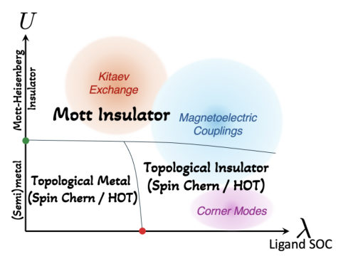
<figcaption class="paper-figure-caption"><b>Fig 1.</b> FIG. 1. Schematic phase diagram of an effective two-orbital eg model as function of ligand SOC λ and Coulomb correlations U at the metal site. For λ = 0, increasing U leads to a transition from a (semi)metal to Mott-Heisenberg insulator. Increasing λ for weakly interacting case, leads to topological metal and topological insulator phases featuring spin-Chern bands and higher order topology with corner modes. The large U limit for strong λ reveals an intertwining of band topology, Kitaev interactions, and magneto-electric effects.</figcaption>
</figure>
<figure class="paper-figure-card">
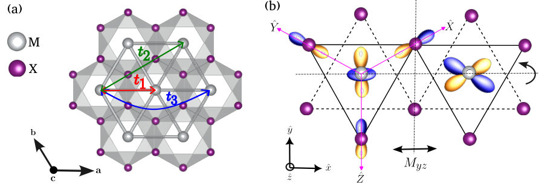
<figcaption class="paper-figure-caption"><b>Fig 2.</b> FIG. 2. (a) Crystal structure of single layer 1T-NiX2, showing the edge-shared network of NiX6 octahedra in crystallographic a-b plane, viewed along the c axis. The effective Ni-Ni hopping terms for first neighbor t1, second neighbor t2, and third neighbor t3 pairs are marked. (b) Relevant (d3Z2−r2, dX2−Y 2) orbitals on Ni sites and (pX, pY , pZ) orbitals on ligand sites, defined in local coordinate systems ˆ X, ˆY , and ˆZ. In units of the Ni-Ni bond length, the nearest neighbor Ni-Ni bond vectors are δ1 = ˆx, δ2 = −1</figcaption>
</figure>
<figure class="paper-figure-card">
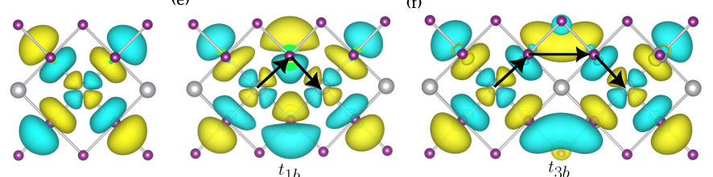
<figcaption class="paper-figure-caption"><b>Fig 3.</b> FIG. 3. DFT-derived eg Wannier functions, and their overlaps defining ligand-mediated spin-independent hopping pathways for t1 and ta, for the representative case of NiI2. The panels (a)-(c) show the Ni centered d3Z2−r2 Wannier function, their overlap at two nearest neighbor Ni sites, defining t1 and their overlap at two third neighbor Ni sites, defining t3, respectively. Panels (d)-(f) show the same but for dX2−Y 2 Wannier functions. Plotted are the isovalue surface of the functions with different signs of the lobes colored differently. The ligand mediated hopping paths are shown with arrows.</figcaption>
</figure>
<figure class="paper-figure-card">
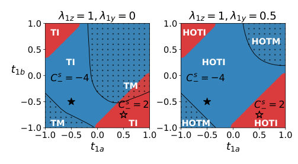
<figcaption class="paper-figure-caption"><b>Fig 4.</b> FIG. 4. Phase diagram showing the various topological phases Cs −for the lower band as a function of the NN hop- pings t1a, t1b. The 3NN hopping parameters are fixed to (t3a, t3b) = (1/3, −1), and we take λ1z &gt; 0. The blue and red regions corresponds to Cs −= −4 and Cs −= 2, respec- tively. The dot-shaded region indicates metallic phases, while the unshaded region corresponds to insulating phases, and the solid black line is the metal-insulator boundary. We label phases as topological insulating (TI) and topological metallic (TM), and the higher order analogues as HOTI and HOTM. The bulk and edge spectra corresponding to the solid stars (Cs −= −4) in each panel are shown in Fig. 5. The...</figcaption>
</figure>
<figure class="paper-figure-card">
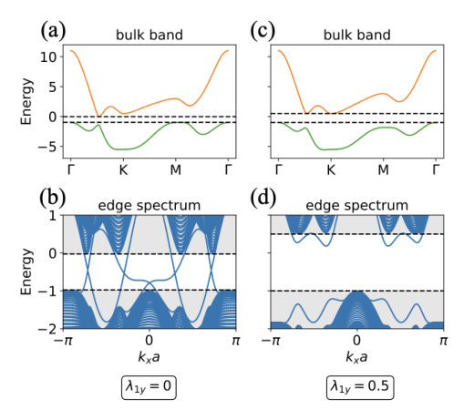
<figcaption class="paper-figure-caption"><b>Fig 5.</b> FIG. 5. Gapped bulk band dispersion, showing + and − bands colored as orange and green respectively, and edge spec- trum for Cs −= −4 for spin-mixing SOC λ1y = 0 (left) and λ1y = 0.5 (right). A nonzero λ1y enhances the bulk band gap of the topological insulator, and gaps out the edge states. Analogous results for the regime of the phase diagram with Cs −= 2 are presented in SM Section III.A [19]</figcaption>
</figure>
</div>

<p><strong>Summary.</strong> This work develops a theoretical model for NiX2 compounds using a two-orbital e_g Hamiltonian that includes bond-dependent spin-orbit coupling. It demonstrates that this model hosts rich physics, including topological band structures and Kitaev magnetism in the strongly correlated limit. The research extends the understanding of magnetoelectric effects by incorporating orbital-dependent spin currents.</p>
<p><strong>Why it may be interesting.</strong> The explicit derivation of magnetoelectric coupling terms beyond single-orbital models, incorporating orbital degrees of freedom, provides a rich theoretical framework for understanding charge-spin coupling in correlated materials.</p>
<details>
<summary>Detailed structure</summary>
<p><strong>Main problem.</strong> The paper investigates emergent phenomena, including band topology, Kitaev magnetism, and magnetoelectricity, in layered transition metal compounds like NiX2.</p>
<p><strong>Main result.</strong> The model predicts topological bands with non-trivial spin Chern numbers and reveals a spin-1 Hamiltonian exhibiting bond-dependent Kitaev interactions in the Mott limit.</p>
<p><strong>Method.</strong> The study uses a two-orbital e_g model derived from DFT calculations, analyzing different limits (non-interacting, Mott insulator) and employing symmetry-based perturbation theory.</p>
<p><strong>Model / system.</strong> The system is modeled by an effective two-orbital e_g Hamiltonian incorporating bond-dependent spin-orbit coupling (SOC) derived from ligand p-orbitals, relevant to NiX2 compounds.</p>
<p><strong>Key observables.</strong> Spin-Chern numbers (Cs), higher-order topological indices, bond-dependent Kitaev exchange interactions, and spin-induced electric polarization (P).</p>
<p><strong>Important parameters / regimes.</strong> Ligand SOC strength (lambda), Coulomb repulsion (U), and various hopping parameters (t_1a, t_3b, etc.).</p>
<p><strong>Assumptions / limitations.</strong> The analysis relies on mapping the full electronic structure onto a minimal two-orbital e_g model and using perturbation theory in the strong coupling limit.</p>
<p><strong>Figures summary.</strong> Figures illustrate phase diagrams (SOC vs U), band structures showing topological edge/corner states, and magnetic phase diagrams (Luttinger-Tisza).</p>
<p><strong>Paper structure.</strong> The paper progresses from establishing the effective two-orbital model via DFT/Wannierization, analyzing the non-interacting topological properties, deriving the effective spin Hamiltonian in the Mott limit, and finally calculating the generalized magnetoelectric response.</p>
</details>
<details>
<summary>Abstract</summary>
<p>Inspired by the electronic structure of compounds like nickel dihalides Ni$X_2$ ($X$=Cl, Br, I), we propose a low-energy two-orbital $e_g$ model featuring bond-dependent spin-orbit terms, driven by atomic spin-orbit coupling on the ligand $X$. We demonstrate that this model hosts a rich array of phenomena. In the non-interacting band limit, spin-orbit-derived spin-dependent and spin-flip hopping terms produce topological bands with spin-Chern numbers $C_s=\pm 2, \pm 4$, and higher order topological states with fractional corner charges, respectively. In the half-filled Mott insulator limit, we recover a spin-$1$ Hamiltonian with bond-dependent Kitaev exchange interactions. We explore the magnetoelectric effect in this two-orbital model using symmetry-based perspective and microscopic calculations, going beyond the generalized Katsura-Nagaosa-Balatsky theory for the single-orbital case. Our work may be relevant to study of doping, strain, or pressure on Ni$X_2$ and related materials.</p>
</details>
<p><sub><a href="#top">↑ back to top</a></sub></p>

<p><a id="paper-2606.03109"></a></p>
<h3 id="game-set-quantum-parameterized-quantum-circuit-for-correlated-equilibrium-in-bayesian-games"><a href="http://arxiv.org/abs/2606.03109v1">Game, Set, Quantum: Parameterized Quantum Circuit for Correlated Equilibrium in Bayesian Games</a></h3>
<p><strong>Authors:</strong> Param Pathak, Vidhi Oad, Nouhaila Innan, Adarsh Ganesan, Muhammad Shafique<br>
<strong>Type:</strong> theory · <strong>Category:</strong> numerical methods · <strong>PDF:</strong> <a href="https://arxiv.org/pdf/2606.03109v1">https://arxiv.org/pdf/2606.03109v1</a><br>
<strong>Analysis basis:</strong> full PDF text, analyzed in chunks
<strong>Topic relevance:</strong> <code>entanglement &amp; information structure</code> <strong>1/5</strong> · <code>methods for driven-dissipative</code> <strong>1/5</strong></p>
<div class="figure-strip-hint">↔ Scroll figures horizontally</div>
<div class="paper-figures-scroll">
<figure class="paper-figure-card">
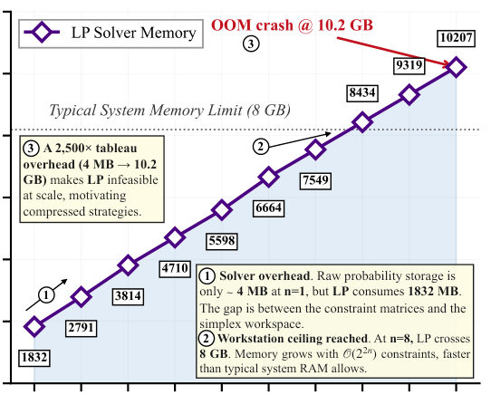
<figcaption class="paper-figure-caption"><b>Fig 1.</b> FIG. 1: Runtime memory of the LP reference solver as the player count increases. The dashed line marks the typical 8 GB system-memory limit. At n = 10, the solver reaches 10.2 GB before termination, reflecting the cost of explicit optimization over the type-action distribution.</figcaption>
</figure>
<figure class="paper-figure-card">
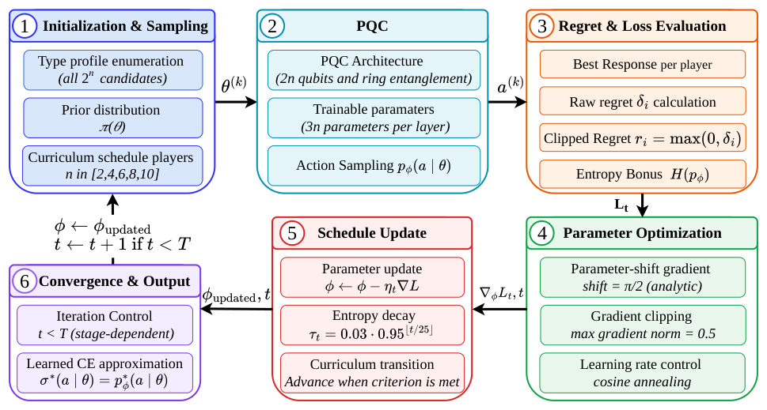
<figcaption class="paper-figure-caption"><b>Fig 2.</b> FIG. 2: Overview of the quantum regret minimization workflow. The method enumerates type profiles, uses a PQC to sample action distributions, computes clipped regret with a negative entropy regularizer, and updates circuit parameters using parameter-shift gradients, gradient clipping, learning-rate annealing, entropy decay, and curriculum progression. The loop returns the learned strategy distribution σ∗(a | θ).</figcaption>
</figure>
<figure class="paper-figure-card">
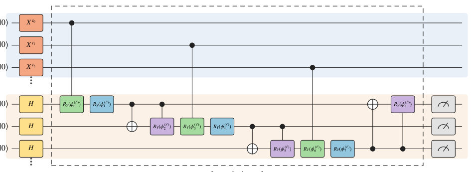
<figcaption class="paper-figure-caption"><b>Fig 3.</b> FIG. 3: Hybrid PQC architecture for approximate Bayes correlated equilibrium computation. The type register encodes private type profiles, while the action register samples joint action recommendations. Each layer applies type-conditioned rotations, local action rotations, and ring entangling blocks, yielding 3nL = O(nL) trainable parameters.</figcaption>
</figure>
<figure class="paper-figure-card">
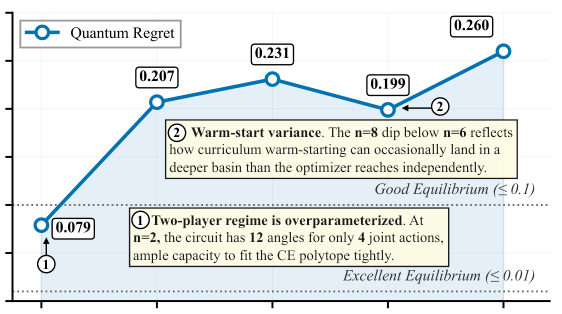
<figcaption class="paper-figure-caption"><b>Fig 4.</b> FIG. 4: Mean clipped regret of the quantum solver across player counts on the matched utility benchmark. The regret remains below 0.30 across all tested cases, with the lowest value observed at n = 2. The nonmonotonic value at n = 8 reflects the behavior of the specific curriculum run rather than a general scaling claim.</figcaption>
</figure>
<figure class="paper-figure-card">
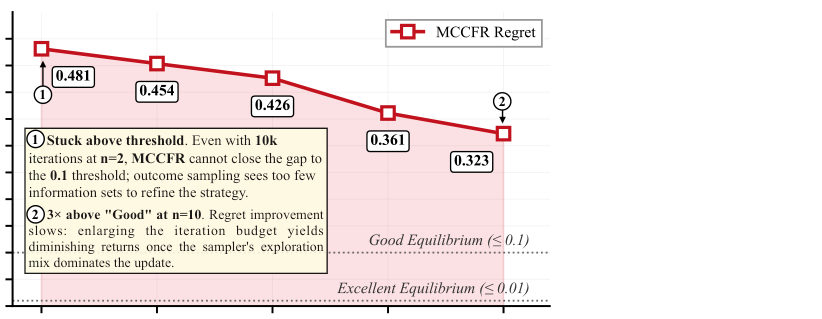
<figcaption class="paper-figure-caption"><b>Fig 5.</b> FIG. 5: Mean clipped regret of MCCFR across player counts on the matched utility benchmark. MCCFR decreases from 0.481 at n = 2 to 0.323 at n = 10, but remains above the quantum solver and DCFR across the tested range.</figcaption>
</figure>
</div>

<p><strong>Summary.</strong> This paper proposes using a Parameterized Quantum Circuit (PQC) within a hybrid quantum-classical framework to approximate Bayes correlated equilibria in Bayesian games. By parameterizing the conditional strategy distribution, the method bypasses the exponential memory bottleneck of classical formulations. The results show that this quantum approach yields superior performance compared to established classical algorithms for moderate numbers of players.</p>
<p><strong>Why it may be interesting.</strong> While the application is in game theory, the core methodology—using a PQC to compress an exponentially large state space into a polynomially parameterized variational form—is a powerful technique relevant to simulating complex quantum many-body states or high-dimensional quantum processes.</p>
<details>
<summary>Detailed structure</summary>
<p><strong>Main problem.</strong> The paper addresses the computational challenge of finding equilibria in Bayesian games, where the explicit representation of the joint type-action space grows exponentially.</p>
<p><strong>Main result.</strong> The proposed quantum solver achieves lower mean clipped regret than MCCFR across all tested player counts for up to eight players, demonstrating a viable variational representation for approximate equilibrium computation.</p>
<p><strong>Method.</strong> A hybrid quantum-classical framework is used, employing a Parameterized Quantum Circuit (PQC) to represent the conditional strategy distribution, trained via gradient-based regret minimization.</p>
<p><strong>Model / system.</strong> The model is a binary-type, binary-action Bayesian game, and the quantum computation is performed on a PQC operating on $2n$ qubits (type and action registers).</p>
<p><strong>Key observables.</strong> Mean clipped regret, maximum positive deviation gain ($\epsilon_{\max}$), and memory usage scaling ($\mathcal{O}(2^{2n})$ vs $\mathcal{O}(nL)$).</p>
<p><strong>Important parameters / regimes.</strong> Number of players ($n$), circuit depth ($L$), learning rate ($\eta_t$), and entropy regularization coefficient ($    au_t$).</p>
<p><strong>Assumptions / limitations.</strong> The method is a variational approximation, meaning convergence to an exact equilibrium is not guaranteed unless the target distribution lies within the PQC's reachable family.</p>
<p><strong>Figures summary.</strong> Figures compare the mean clipped regret of the quantum solver, MCCFR, and DCFR across increasing player counts ($n$), showing the quantum solver's advantage up to $n=8$.</p>
<p><strong>Paper structure.</strong> The paper introduces the problem, details the PQC architecture and the hybrid quantum-classical training workflow (including regret minimization and entropy regularization), presents comparative results against classical baselines, and discusses scaling and noise effects.</p>
</details>
<details>
<summary>Abstract</summary>
<p>Strategic decision-making among many agents under incomplete information is central to economics, security, and multi-agent artificial intelligence (AI). Computing equilibria in such settings is challenging because the joint type-action space grows exponentially with the number of players. In binary-type, binary-action Bayesian games, an explicit representation over type-action profiles requires O(22n) entries, making direct linear-programming (LP) formulations memory intensive at moderate player counts. We propose a hybrid quantum-classical framework for approximating Bayes correlated equilibrium using a parameterized quantum circuit (PQC). The PQC represents the conditional strategy distribution with O(nL) trainable parameters, where n is the number of players and L is the circuit depth; for the largest setting studied here, n = 10 and L = 2, this corresponds to 60 trainable angles. The circuit is trained by gradient-based regret minimization with a negative entropy regularizer and a curriculum schedule over player counts. On a poker-style Bayesian game with two to ten players, the proposed solver achieves lower mean clipped regret than MCCFR across all tested player counts and lower regret than DCFR up to eight players, while DCFR performs best at ten players. These results show that compact PQC parameterizations can provide a viable variational representation for approximate equilibrium computation, while highlighting the roles of ansatz expressivity, optimization strategy, and classical simulation cost.</p>
</details>
<p><sub><a href="#top">↑ back to top</a></sub></p>

<p><a id="paper-2606.03300"></a></p>
<h3 id="a-proof-of-an-identity-for-the-critical-exponents-of-jamming"><a href="http://arxiv.org/abs/2606.03300v1">A proof of an identity for the critical exponents of jamming</a></h3>
<p><strong>Authors:</strong> Giorgio Parisi, Francesco Zamponi<br>
<strong>Type:</strong> theory · <strong>Category:</strong> disordered systems and neural networks · <strong>PDF:</strong> <a href="https://arxiv.org/pdf/2606.03300v1">https://arxiv.org/pdf/2606.03300v1</a><br>
<strong>Analysis basis:</strong> full PDF text, analyzed in chunks
<strong>Topic relevance:</strong> <code>Keldysh / 2PI / non-Gaussian methods</code> <strong>1/5</strong></p>
<div class="figure-strip-hint">↔ Scroll figures horizontally</div>
<div class="paper-figures-scroll">
<figure class="paper-figure-card">
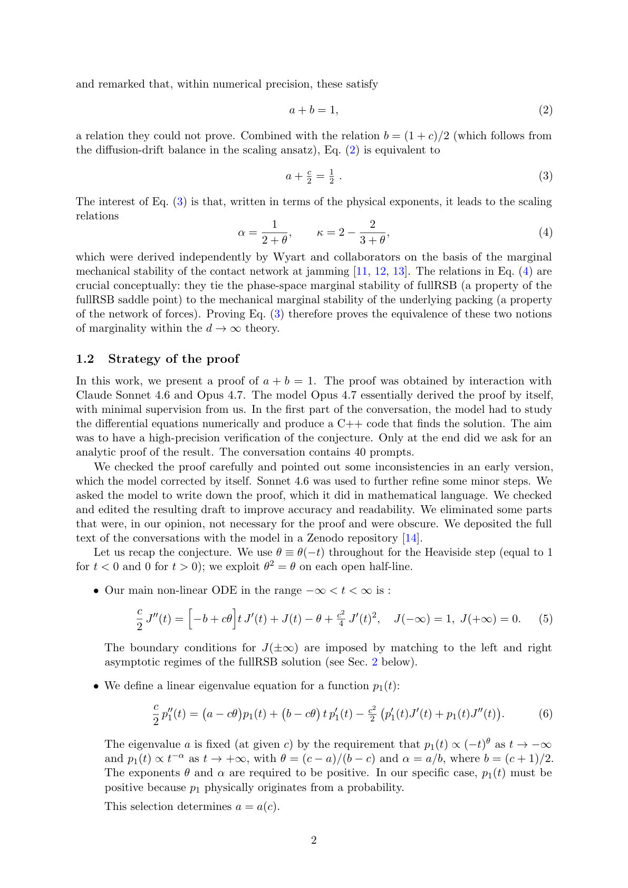
<figcaption class="paper-figure-caption"><b>Fig 1.</b> Low-resolution page preview, page 2</figcaption>
</figure>
<figure class="paper-figure-card">
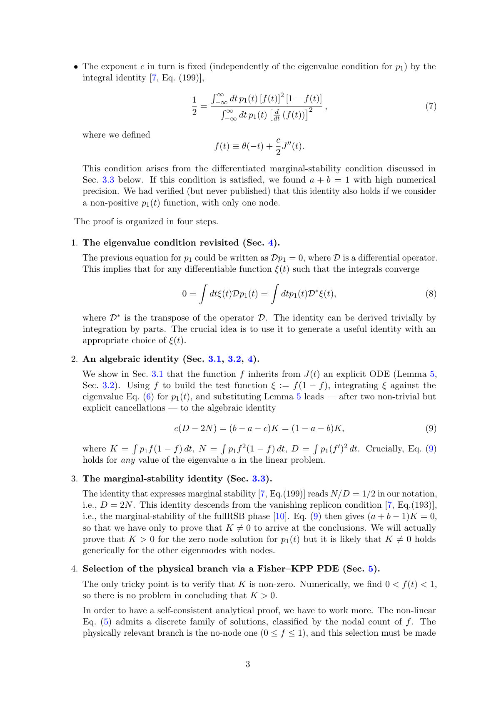
<figcaption class="paper-figure-caption"><b>Fig 2.</b> Low-resolution page preview, page 3</figcaption>
</figure>
<figure class="paper-figure-card">
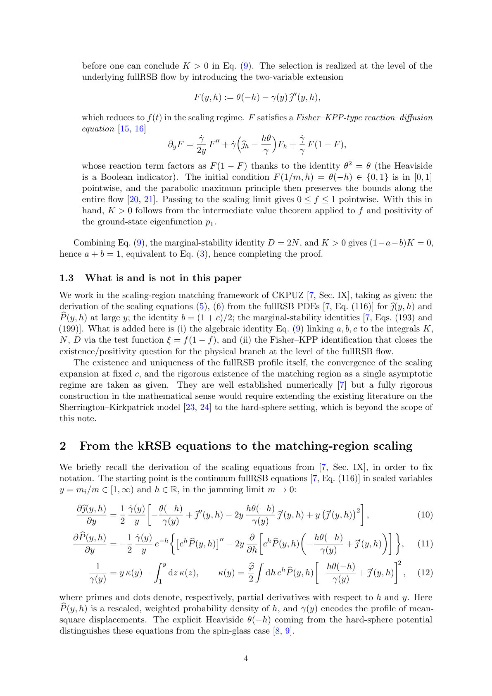
<figcaption class="paper-figure-caption"><b>Fig 3.</b> Low-resolution page preview, page 4</figcaption>
</figure>
<figure class="paper-figure-card">
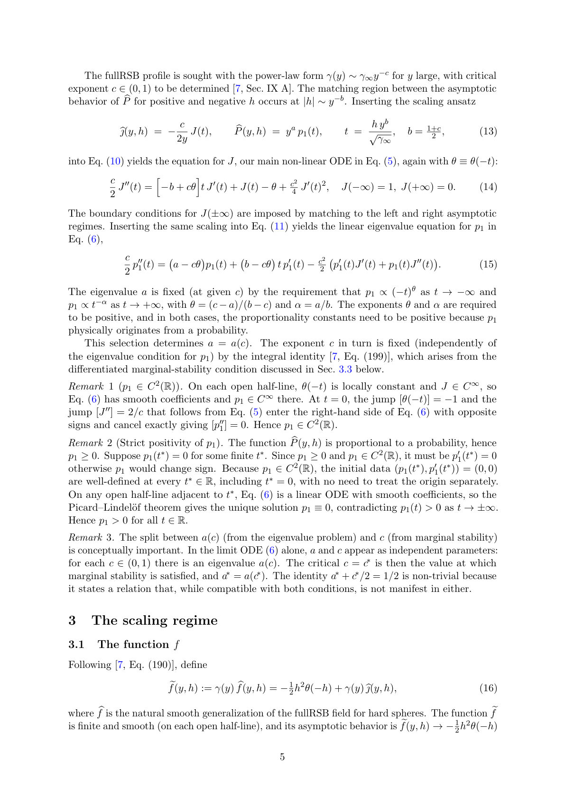
<figcaption class="paper-figure-caption"><b>Fig 4.</b> Low-resolution page preview, page 5</figcaption>
</figure>
<figure class="paper-figure-card">
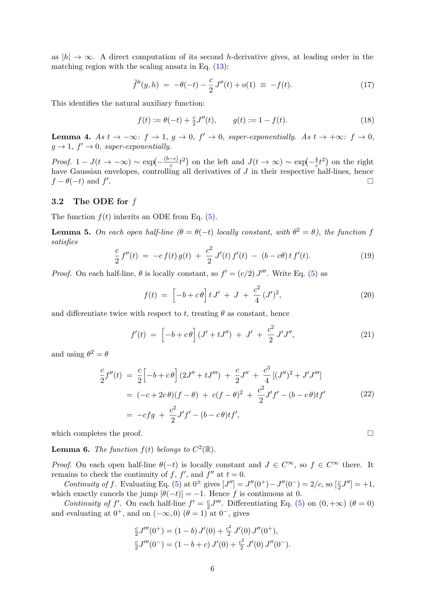
<figcaption class="paper-figure-caption"><b>Fig 5.</b> Low-resolution page preview, page 6</figcaption>
</figure>
</div>

<p><strong>Summary.</strong> This paper provides a rigorous, analytic proof that a key identity, $a+b=1$, holds for the critical exponents describing the jamming transition in dense hard spheres. The proof connects the mathematical structure of the full Replica-Symmetry-Breaking theory to the physical stability criteria of the system. This establishes a deep equivalence between theoretical scaling laws and mechanical stability arguments in the jamming limit.</p>
<p><strong>Why it may be interesting.</strong> While focused on classical statistical mechanics, the rigorous mathematical techniques involving functional analysis (maximum principle) and the analysis of complex scaling equations are highly relevant to modern theoretical physics, including quantum many-body systems.</p>
<details>
<summary>Detailed structure</summary>
<p><strong>Main problem.</strong> To provide an analytic proof of the identity $a+b=1$ for the critical exponents governing the jamming transition in dense hard spheres.</p>
<p><strong>Main result.</strong> The authors analytically prove the identity $a+b=1$ by showing that the phase-space marginal stability condition derived from the fullRSB equations is equivalent to the mechanical marginal stability condition.</p>
<p><strong>Method.</strong> The proof combines analyzing the asymptotic behavior of coupled non-linear differential equations with applying the maximum principle to establish bounds on auxiliary functions derived from the fullRSB profile.</p>
<p><strong>Model / system.</strong> The system is amorphous packings of hard or soft spheres undergoing a jamming transition, modeled using the full Replica-Symmetry-Breaking (fullRSB) Ansatz in the infinite-dimensional limit ($d 	o \infty$).</p>
<p><strong>Key observables.</strong> Critical exponents $a, b, c$ (from fullRSB) and physical exponents $\alpha, 	heta, \kappa$ (controlling gap, force, and overlap distributions).</p>
<p><strong>Important parameters / regimes.</strong> The jamming transition point, the infinite dimension limit ($d 	o \infty$), and the scaling exponents $a, b, c$.</p>
<p><strong>Assumptions / limitations.</strong> The derivation assumes the validity of the scaling equations and the marginal-stability identities established in previous work (CKPUZ).</p>
<p><strong>Paper structure.</strong> The paper proceeds by revisiting the eigenvalue condition, deriving an algebraic identity from the fullRSB equations, and combining this with the marginal-stability identity to force the conclusion $a+b=1$.</p>
</details>
<details>
<summary>Abstract</summary>
<p>Within the full replica-symmetry-breaking (fullRSB) solution of dense hard spheres in infinite dimension, Charbonneau, Kurchan, Parisi, Urbani, and Zamponi (CKPUZ; J.Stat.Mech.P10009, 2014) introduced three critical exponents $a$, $b$, $c$ governing the matching region of the fullRSB profile near the jamming transition. These exponents satisfy two scaling relations. The first, $b=(1+c)/2$, was established analytically by the diffusion-drift balance in the scaling ansatz. The second, $a+b=1$, was observed numerically to arbitrary precision but could not be proven. The exponents $a,b,c$ of the scaling fullRSB ansatz are related to the physical exponents $α, θ, κ$ that control the gap, force, and overlap distributions by the relations $α=a/b$, $θ=(c-a)/(b-c)$, $κ=c+1$. Crucially, the relation $a+b=1$ yields the scaling relations $α=1/(2+θ)$ and $κ=2-2/(3+θ)$ predicted on independent grounds by the mechanical-marginal-stability arguments of Wyart and collaborators. Here, we give an analytic proof of the identity $a+b=1$ from the scaling fullRSB equations. The proof was obtained through interaction with Claude (Sonnet 4.6 and Opus 4.7) and verified by us.</p>
</details>
<p><sub><a href="#top">↑ back to top</a></sub></p>

<p><a id="paper-2606.03181"></a></p>
<h3 id="generalised-simultaneous-transmission-of-arbitrary-quantum-states-and-classical-information"><a href="http://arxiv.org/abs/2606.03181v1">Generalised simultaneous transmission of arbitrary quantum states and classical information</a></h3>
<p><strong>Authors:</strong> Timothy C. Ralph, Nicholas Zaunders<br>
<strong>Type:</strong> theory · <strong>Category:</strong> quantum information and computing · <strong>PDF:</strong> <a href="https://arxiv.org/pdf/2606.03181v1">https://arxiv.org/pdf/2606.03181v1</a><br>
<strong>Analysis basis:</strong> full PDF text, analyzed in chunks
<strong>Topic relevance:</strong> <code>entanglement &amp; information structure</code> <strong>1/5</strong></p>
<div class="figure-strip-hint">↔ Scroll figures horizontally</div>
<div class="paper-figures-scroll">
<figure class="paper-figure-card">
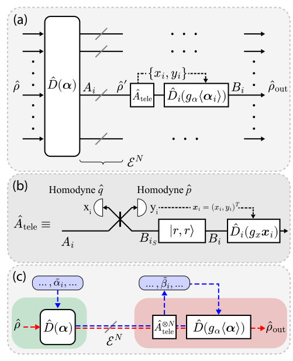
<figcaption class="paper-figure-caption"><b>Fig 1.</b> Figure 1. Diagram showing the CMQC protocol (a) as well as the teleportation circuit ˆAtele (b). The N-mode state ˆρ Alice wishes to transmit is passed through the displacement operator ˆD(α), which encodes N classical symbols by displac- ing each arm in the phase space according to some coherent- state classical protocol. The displaced state is then trans- mitted over the N-mode channel EN to Bob. Bob teleports each mode of the displaced transmitted state ˆρ′ by mixing the incoming mode with one half of an EPR state of squeez- ing r on a balanced beamsplitter, then performing a dual homodyne measurement and correcting the output state via the measurement-dependent unitary operation...</figcaption>
</figure>
<figure class="paper-figure-card">
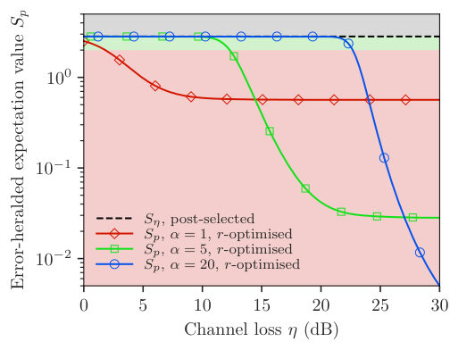
<figcaption class="paper-figure-caption"><b>Fig 2.</b> Figure 2. CHSH criterion Sp as a function of channel loss η and classical signal strength α, evaluated on ρens. At each point, Sp is optimised over Bob’s EPR resource squeezing r. Post-selecting the correlations based on successful photon counts in principle permits the protocol to saturate the upper bound of Sp = 2 √</figcaption>
</figure>
<figure class="paper-figure-card">
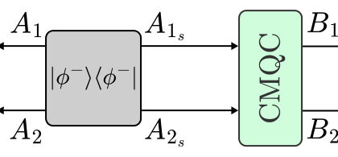
<figcaption class="paper-figure-caption"><b>Fig 3.</b> Figure 3. Diagram showing the transmission of a dual-rail Bell state ϕ− ϕ− via the CMQC protocol. Each half of the dual- rail state is encoded in the modes A1, A2 and A1s, A2s respectively, where the logical states are given by |0⟩L1 = |1⟩A1 |0⟩A2, |1⟩L1 = |0⟩A1 |1⟩A2, |0⟩L2 = |1⟩A1s |0⟩A2s and |1⟩L2 = |0⟩A1s |1⟩A2s .The half corresponding to the logical mode L2 is sent by Alice to Bob, where it is teleported onto the modes B1, B2 such that the total output of the protocol becomes an approximate equivalent dual-rail Bell state over the modes A1, A2 and B1, B2.</figcaption>
</figure>
<figure class="paper-figure-card">
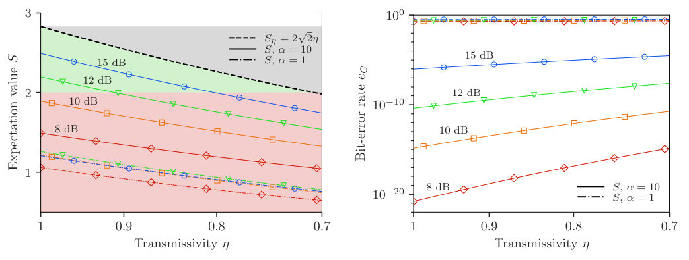
<figcaption class="paper-figure-caption"><b>Fig 4.</b> Figure 4. (a) Numerical evaluation of the CHSH criterion S for an instance of the CMQC protocol where the resource state is the dual-rail Bell state ˆρ = ϕ− ϕ− and the channels are identical pure-loss channels of transmissivity η. S is plotted as a function of the loss η for the case where the classical signal strength α = 1 (dash-dotted lines) and α = 10 (solid lines). The squeezing r of the teleporter resource EPR state is varied between multiple values representing feasible experimental parameters (e.g. [45–50]. For sufficiently high signal strength, as teleporter squeezing increases S begins to approach the upper bound Sη = 2 √</figcaption>
</figure>
<figure class="paper-figure-card">
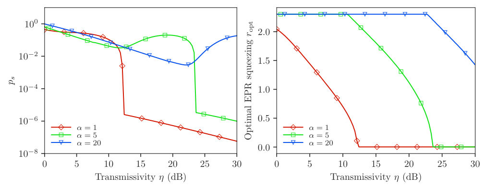
<figcaption class="paper-figure-caption"><b>Fig 5.</b> Figure 5. Success probabilities (left) and optimal rates (right) for the postselected protocols shown in Fig. 2 of the main text. The rate at which Bob obtains the correct measurement results with which to evaluate S is given trivially by the probability of success ps. For each loss η, the postselected quantity Sp = S/ps is optimised over the two-mode squeezing of Bob’s EPR resource r between r = 0 and 20 dB (r ∈[0, 2.3]). The optimal strategy for protocols with a high classical signal α and so high classical SNR is the obvious one, i.e. r −→∞. This helps minimise the errors arising from imperfect teleportation so long as classical errors remain low. On the other hand, for low classical...</figcaption>
</figure>
</div>

<p><strong>Summary.</strong> This paper details a Continuous-Variable Quantum Communication (CMQC) protocol enabling the simultaneous, low-error transmission of arbitrary quantum states and classical data. By encoding classical information via phase-space displacements and using continuous-variable teleportation, the scheme demonstrates high fidelity reconstruction. The results show that the protocol is robust, maintaining quantum correlations strong enough to violate the Bell inequality even under realistic channel losses.</p>
<p><strong>Why it may be interesting.</strong> This work directly addresses quantum networking by proposing a robust method to multiplex classical data and quantum entanglement over one physical channel, which is crucial for future quantum internet architectures.</p>
<details>
<summary>Detailed structure</summary>
<p><strong>Main problem.</strong> To develop a protocol for the simultaneous transmission of arbitrary quantum states and classical information over a single quantum channel without losing the integrity of either information type.</p>
<p><strong>Main result.</strong> The protocol can achieve perfect reconstruction of both the classical signal and the quantum state in the limits of high classical signal strength and high squeezing, and it can violate the CHSH inequality under realistic conditions.</p>
<p><strong>Method.</strong> The scheme uses continuous-variable quantum teleportation combined with classical phase-space displacements for encoding and subsequent inverse displacements for decoding.</p>
<p><strong>Model / system.</strong> The system models optical quantum states transmitted through a lossy bosonic channel, utilizing continuous-variable teleportation and encoding classical data via coherent-state displacements.</p>
<p><strong>Key observables.</strong> Symbol-Error Rate ($e_S$), CHSH expectation value ($S$), and the output state ($\hat{
ho}_{	ext{out}}$).</p>
<p><strong>Important parameters / regimes.</strong> Transmissivity ($\eta$), squeezing parameter ($r$), and classical signal strength ($\alpha$).</p>
<p><strong>Assumptions / limitations.</strong> The protocol assumes the ability to probabilistically infer the true classical displacement and relies on the channel being a pure-loss channel for some derivations.</p>
<p><strong>Figures summary.</strong> Figures illustrate the protocol structure, the dependence of the CHSH value ($S$) on channel loss ($\eta$) for varying classical signal strength ($\alpha$) and squeezing ($r$), and the success probabilities ($p_s$) for post-selection.</p>
<p><strong>Paper structure.</strong> The paper introduces the CMQC protocol, analyzes its effective channel map in various limits (high SNR, infinite squeezing), and rigorously tests its capability to maintain quantum correlations by calculating the CHSH value for transmitted Bell states.</p>
</details>
<details>
<summary>Abstract</summary>
<p>We present a protocol which allows for arbitrary optical quantum states to simultaneously carry and transmit classical data, without sacrificing the integrity of either the quantum or classical information. Our scheme encodes classical information via displacements in the phase space prior to transmission and retrieves each classical symbol via a Gaussian continuous-variable teleportation. The original quantum state is then restored by guessing the the original displacement and performing the appropriate inverse operation. In the limit of sufficiently high classical signal and high squeezing, we show that our scheme is capable of perfectly reconstructing both the input classical signal and the input quantum state without loss of coherence. An example is given in terms of the transmission of a dual-rail Bell state.</p>
</details>
<p><sub><a href="#top">↑ back to top</a></sub></p>

<p><a id="paper-2606.03082"></a></p>
<h3 id="magnetic-symmetries-and-the-structure-of-correlation-functions-in-quantum-field-theory"><a href="http://arxiv.org/abs/2606.03082v1">Magnetic Symmetries and the Structure of Correlation Functions in Quantum Field Theory</a></h3>
<p><strong>Authors:</strong> Masaru Hongo, Kentaro Nishimura<br>
<strong>Type:</strong> theory · <strong>Category:</strong> strongly correlated electrons · <strong>PDF:</strong> <a href="https://arxiv.org/pdf/2606.03082v1">https://arxiv.org/pdf/2606.03082v1</a><br>
<strong>Analysis basis:</strong> full PDF text, analyzed in chunks
<strong>Topic relevance:</strong> <code>Keldysh / 2PI / non-Gaussian methods</code> <strong>1/5</strong></p>
<div class="figure-strip-hint">↔ Scroll figures horizontally</div>
<div class="paper-figures-scroll">
<figure class="paper-figure-card">
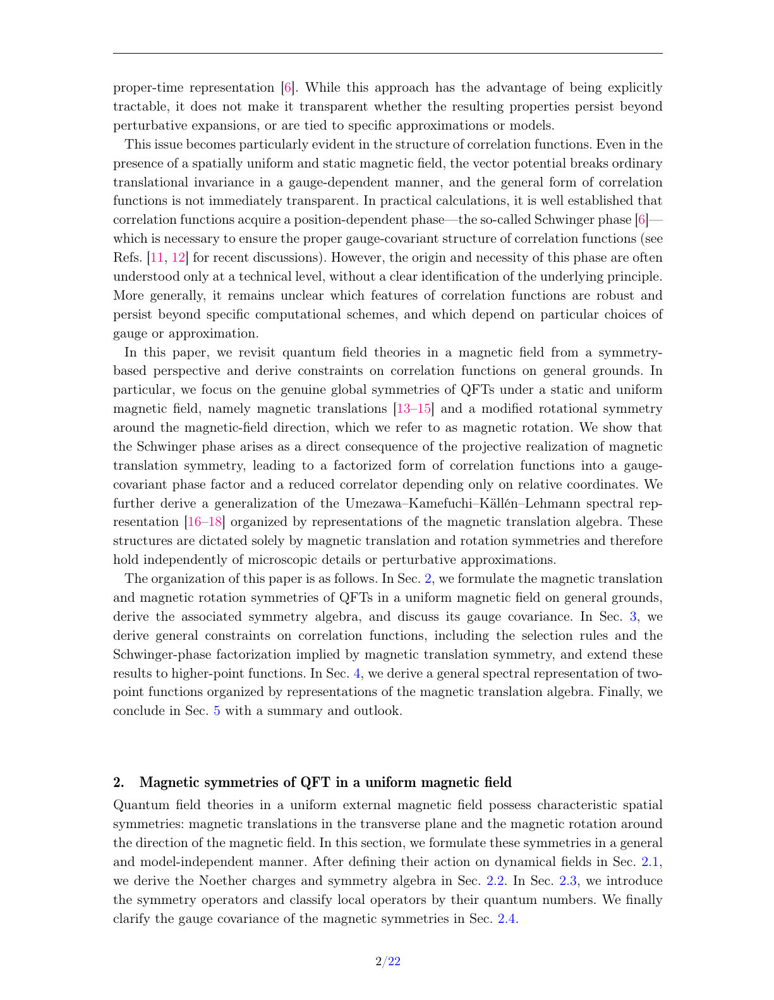
<figcaption class="paper-figure-caption"><b>Fig 1.</b> Low-resolution page preview, page 2</figcaption>
</figure>
<figure class="paper-figure-card">
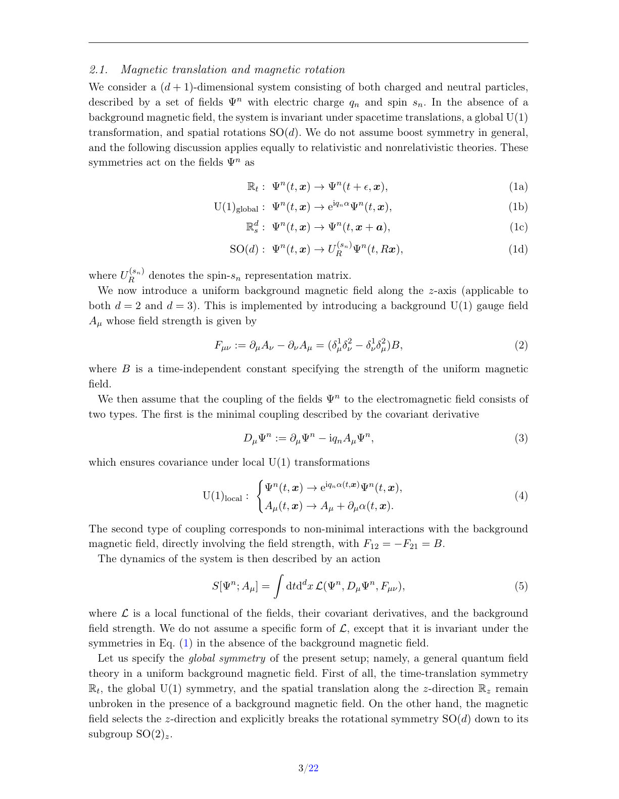
<figcaption class="paper-figure-caption"><b>Fig 2.</b> Low-resolution page preview, page 3</figcaption>
</figure>
<figure class="paper-figure-card">
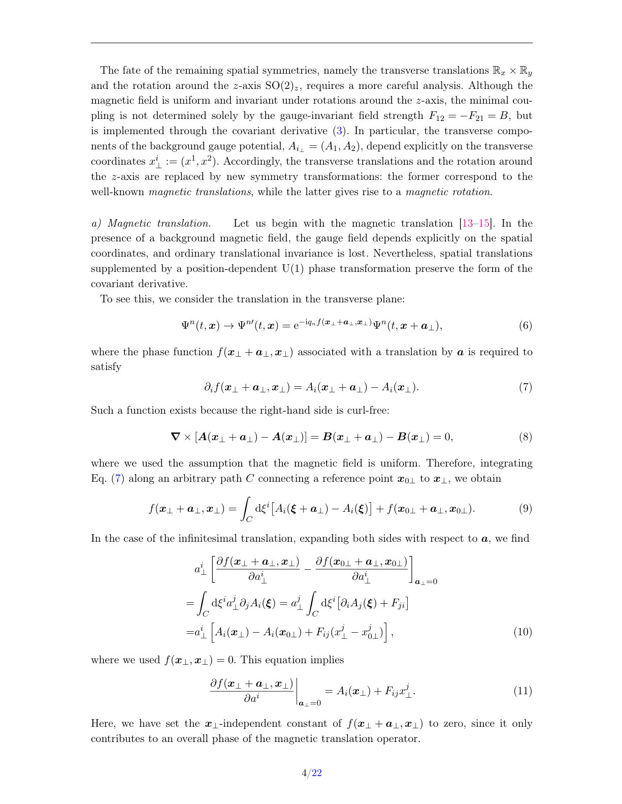
<figcaption class="paper-figure-caption"><b>Fig 3.</b> Low-resolution page preview, page 4</figcaption>
</figure>
<figure class="paper-figure-card">
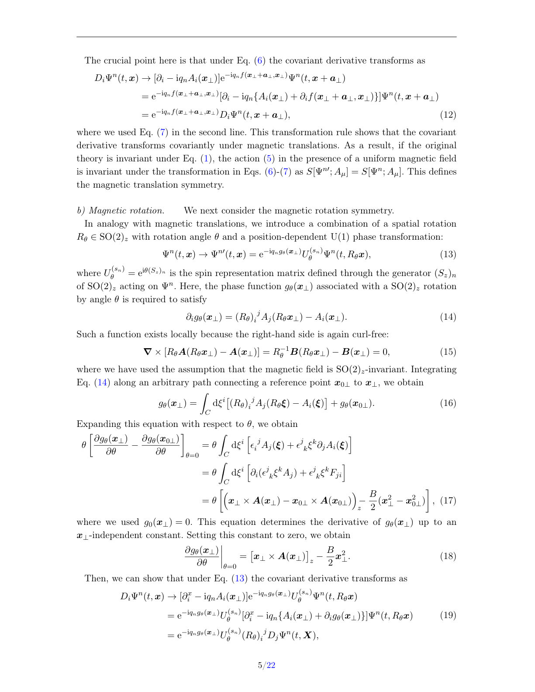
<figcaption class="paper-figure-caption"><b>Fig 4.</b> Low-resolution page preview, page 5</figcaption>
</figure>
<figure class="paper-figure-card">
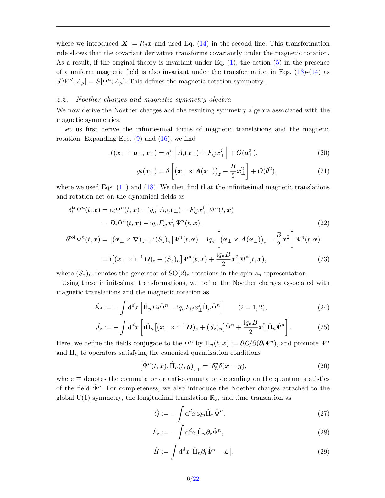
<figcaption class="paper-figure-caption"><b>Fig 5.</b> Low-resolution page preview, page 6</figcaption>
</figure>
</div>

<p><strong>Summary.</strong> This theoretical paper develops a model-independent framework to analyze quantum field theories in strong magnetic fields by exploiting magnetic translation and rotation symmetries. It shows that these symmetries force correlation functions to factorize and acquire a Schwinger phase. Ultimately, the authors derive a rigorous spectral representation for these correlation functions, applicable to various physical systems in the presence of a magnetic field.</p>
<p><strong>Why it may be interesting.</strong> The derivation of spectral representations and correlation function factorizations based purely on symmetry principles provides a powerful, non-perturbative tool applicable to strongly correlated systems in external fields, which is highly relevant for understanding magnetotransport phenomena.</p>
<details>
<summary>Detailed structure</summary>
<p><strong>Main problem.</strong> To investigate the general consequences of magnetic symmetries (translations and rotations) on correlation functions in Quantum Field Theory when subjected to a static, uniform external magnetic field.</p>
<p><strong>Main result.</strong> The magnetic translation symmetry forces correlation functions to acquire a Schwinger phase and leads to a factorized form, allowing for a model-independent spectral representation based on the magnetic translation algebra.</p>
<p><strong>Method.</strong> The analysis uses symmetry constraints derived from the projective structure of the magnetic translation algebra, avoiding specific models or perturbative expansions.</p>
<p><strong>Model / system.</strong> The system is a Quantum Field Theory (QFT) describing charged particles coupled to a background U(1) gauge field with a constant magnetic field (B) along the z-axis.</p>
<p><strong>Key observables.</strong> Two-point and N-point Wightman/Green's functions, the Schwinger phase, and the spectral representation of the reduced correlator.</p>
<p><strong>Important parameters / regimes.</strong> The magnetic field strength (B), the charge of the particles (q), and the transverse coordinates ($x_\perp$).</p>
<p><strong>Assumptions / limitations.</strong> The magnetic field is assumed to be static and uniform; the analysis assumes the magnetic symmetries are global symmetries acting on the dynamical fields.</p>
<p><strong>Paper structure.</strong> The paper proceeds by first establishing the magnetic symmetries and their non-Abelian algebra (Chunk 2). It then applies these symmetries to constrain N-point correlation functions, deriving the Schwinger phase and factorization (Chunk 3). Finally, it derives the spectral representation of the reduced two-point function using the magnetic translation algebra, yielding basis-independent forms for both Landau and symmetric gauges (Chunks 4 &amp; 5).</p>
</details>
<details>
<summary>Abstract</summary>
<p>Quantum field theories in the presence of a static and uniform external magnetic field possess two characteristic spatial symmetries: magnetic translations and magnetic rotation. We investigate general consequences of these symmetries on correlation functions from a model-independent perspective, without relying on specific models or perturbative expansions. The projective structure of magnetic translation symmetry constrains correlation functions of charged operators to acquire the Schwinger phase and leads to a factorized form into a gauge-covariant phase factor and a reduced correlator depending only on relative coordinates. We further derive the spectral representation of two-point functions in terms of representations of the magnetic translation algebra, in which the Landau- and symmetric-gauge descriptions arise as different choices of basis. Our results provide a unified symmetry-based framework for quantum field theories in external magnetic fields.</p>
</details>
<p><sub><a href="#top">↑ back to top</a></sub></p>

<p><a id="paper-2606.02845"></a></p>
<h3 id="phase-transitions-through-excited-state-level-crossings-and-topological-indicators-the-case-of-the-xxz-chain-with-staggered-ising-interaction"><a href="http://arxiv.org/abs/2606.02845v1">Phase transitions through excited-state level crossings and topological indicators: the case of the XXZ chain with staggered Ising interaction</a></h3>
<p><strong>Authors:</strong> B. F. Márquez, K. Hallberg, A. A. Aligia<br>
<strong>Type:</strong> theory · <strong>Category:</strong> strongly correlated electrons · <strong>PDF:</strong> <a href="https://arxiv.org/pdf/2606.02845v1">https://arxiv.org/pdf/2606.02845v1</a><br>
<strong>Analysis basis:</strong> full PDF text, analyzed in chunks
<strong>Topic relevance:</strong> <code>analog quantum simulation</code> <strong>1/5</strong></p>
<div class="figure-strip-hint">↔ Scroll figures horizontally</div>
<div class="paper-figures-scroll">
<figure class="paper-figure-card">
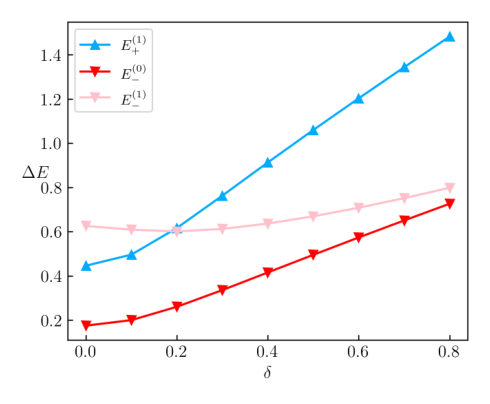
<figcaption class="paper-figure-caption"><b>Fig 1.</b> FIG. 1. Excitation energies of low-lying states in the even (Sz tot, k′, F, P) = (0, 0, +, +) and odd (Sz tot, k, F, P) = (0, 0, −, −) sectors for L = 18 and ∆= 1.3, measured with respect to the ground state. The lowest odd-sector state E(0) − does not participate in the crossing associated with the N´eel- dimer transition. The finite-size pseudo-critical point is ex- tracted from the crossing between E(1) + and E(1) −.</figcaption>
</figure>
<figure class="paper-figure-card">
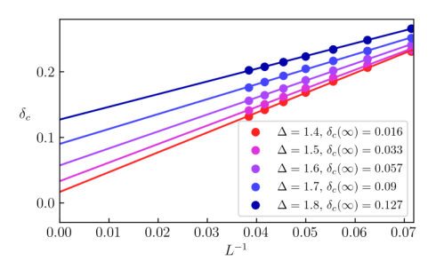
<figcaption class="paper-figure-caption"><b>Fig 2.</b> FIG. 2. Finite size scaling of the pseudo-critical point ob- tained from the MCEL method for 1.4 ≤∆≤1.8. The extrapolated values δc(∞) were obtained by fitting Eq.(11) to linear order in L−1.</figcaption>
</figure>
<figure class="paper-figure-card">
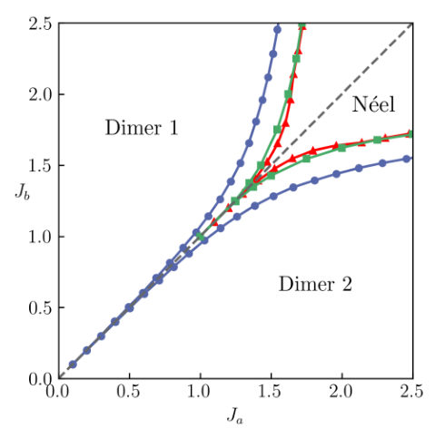
<figcaption class="paper-figure-caption"><b>Fig 3.</b> FIG. 3. Phase diagram obtained from exact diagonaliza- tion. Red triangles denote the thermodynamic extrapolation of the level crossing E(1) + = E(1) −, while blue dots denote the extrapolated sign change of the generalized position operator. Green squares are the DMRG data of Ref. [21], provided by H. Nigam. We use Ja = ∆(1 + δ) and Jb = ∆(1 −δ) to com- pare directly with Ref. [21]. The agreement between the red and green points supports the identification of the selected crossing as the finite-size precursor of the N´eel-dimer critical line.</figcaption>
</figure>
</div>

<p><strong>Summary.</strong> This work determines the phase diagram of a staggered XXZ spin chain by comparing two advanced diagnostic techniques: topological indicators and energy level crossings. The authors find that while both methods are powerful, the energy level crossing method provides a more reliable determination of the Néel-dimer transition boundary, especially when the system exhibits broken translational symmetry.</p>
<p><strong>Why it may be interesting.</strong> The rigorous comparison of multiple theoretical diagnostics (topological vs. spectral) to pinpoint a quantum critical point in a complex, interacting 1D model is highly valuable for understanding the robustness of phase transition detection in strongly correlated systems.</p>
<details>
<summary>Detailed structure</summary>
<p><strong>Main problem.</strong> The paper aims to determine the phase diagram, specifically the transition between Néel and dimerized phases, in the spin-1/2 XXZ chain subjected to a staggered Ising interaction.</p>
<p><strong>Main result.</strong> The combination of two diagnostic methods—topological indicators and energy level crossings—provides a robust and efficient way to locate the phase boundary, with the level crossing method being particularly accurate despite the loss of translational symmetry.</p>
<p><strong>Method.</strong> The authors employ exact diagonalization on finite systems, comparing results from topological indicators (based on generalized position operators) with those derived from the crossing of excited energy levels (MCEL), which is justified by conformal-field theory.</p>
<p><strong>Model / system.</strong> The system is a spin-1/2 XXZ chain Hamiltonian incorporating a staggered Ising interaction ($\delta 
eq 0$) and a uniform transverse exchange. This alternating interaction doubles the unit cell and drives the competition between Néel and bond-dimerized orders.</p>
<p><strong>Key observables.</strong> Topological indicators ($\alpha_s$, $\alpha_\uparrow$), the pseudo-critical point $\delta_c(L)$ extracted from energy level crossings ($E^{(1)}_+(L, \delta_c) = E^{(1)}_-(L, \delta_c)$), and the correlation length ($\xi$).</p>
<p><strong>Important parameters / regimes.</strong> Anisotropy parameter ($\Delta$), staggering parameter ($\delta$), and system size ($L$). The analysis distinguishes between the homogeneous ($\delta=0$) and staggered ($\delta 
eq 0$) regimes.</p>
<p><strong>Assumptions / limitations.</strong> The topological indicator method's accuracy is compromised when the energy gap is very small near the transition. The analysis relies on mapping the low-energy physics to the double sine-Gordon theory and using finite-size scaling extrapolation.</p>
<p><strong>Figures summary.</strong> Figures illustrate the extraction of the pseudo-critical point from the crossing of first excited energy levels for finite systems, and show the finite-size scaling of this critical point across different anisotropy values.</p>
<p><strong>Paper structure.</strong> The paper systematically compares two diagnostic tools—topological indicators and MCEL—to map the phase diagram. It analyzes the underlying physics using bosonization and relates the finite-size corrections to known critical theories (Ising universality class).</p>
</details>
<details>
<summary>Abstract</summary>
<p>We combine two ways of determining the phase diagram of the spin-$1/2$ XXZ chain with a staggered Ising interaction and uniform transverse exchange, based on exact diagonalization. The model realizes a competition between Néel order and bond-dimerized phases generated by the alternating Ising interaction. The simplest approach to determine the phase boundaries is to use topological indicators based on generalized position operators. We show that in general, the bosonized and numerical results for the topological indicators agree. The second is based on crossings of excited energy levels and justified by conformal-field theory. In spite of the partial loss of translational symmetry caused by the alternating Ising interaction, we find that the latter method provides an accurate determination of the boundary between Néel and dimerized phases. Instead, while the jumps of a topological indicator provide a qualitatively correct phase diagram, its accuracy is affected when the gap is very small (or the correlation length very large) at one side of the transition, as we show using field-theoretical arguments. The combination of both methods provides a more efficient way of calculating phase diagrams for correlated one-dimensional models than other widely used conventional approaches.</p>
</details>
<p><sub><a href="#top">↑ back to top</a></sub></p>

<p><a id="paper-2606.03836"></a></p>
<h3 id="the-bulk-spectral-gap-is-semi-decidable-a-convergent-family-of-certified-upper-bounds"><a href="http://arxiv.org/abs/2606.03836v1">The bulk spectral gap is semi-decidable: a convergent family of certified upper bounds</a></h3>
<p><strong>Authors:</strong> Xiangling Xu, Matthias Schötz, Jie Wang, Victor Magron, Igor Klep, Omar Fawzi, Marc-Olivier Renou<br>
<strong>Type:</strong> theory · <strong>Category:</strong> statistical mechanics · <strong>PDF:</strong> <a href="https://arxiv.org/pdf/2606.03836v1">https://arxiv.org/pdf/2606.03836v1</a><br>
<strong>Analysis basis:</strong> full PDF text, analyzed in chunks
<strong>Topic relevance:</strong> <code>analog quantum simulation</code> <strong>1/5</strong></p>
<div class="figure-strip-hint">↔ Scroll figures horizontally</div>
<div class="paper-figures-scroll">
<figure class="paper-figure-card">
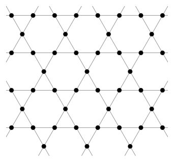
<figcaption class="paper-figure-caption"><b>Fig 1.</b> Figure 1: A portion of the kagome lattice. From “Kagome- lattice-bw.svg” by WilliamSix (Wikimedia Commons), CC BY-SA 4.0.</figcaption>
</figure>
<figure class="paper-figure-card">
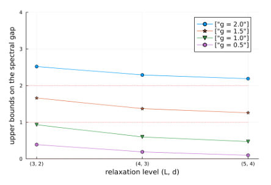
<figcaption class="paper-figure-caption"><b>Fig 2.</b> Figure 2: Certified upper bounds for the transverse-field Ising chain with spin-flip symmetry imposed. Largest fea- sible γ for g = 0.5, 1.0, 1.5, 2.0 along the relaxation levels (L, d) = (n + 1, n), n = 2, 3, 4. As the relaxations are nested, these certified upper bounds decrease monotoni- cally in L and d. In the disordered phase (g = 1.5, 2.0) the bounds approach the known gap value 2(g −1) from above. At criticality (g = 1.0) the bound decays slowly, possibly reflecting divergent correlation length. For the ordered phase (g = 0.5), the sign-flip symmetry selects the symmetric mixed ground state whose local bulk gap vanishes, and our bounds approach to zero. Further calculations with...</figcaption>
</figure>
<figure class="paper-figure-card">
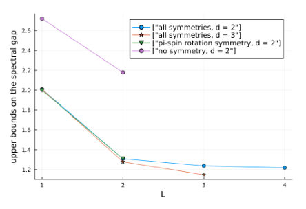
<figcaption class="paper-figure-caption"><b>Fig 3.</b> Figure 3: Certified upper bounds for the spin- 1</figcaption>
</figure>
</div>

<p><strong>Summary.</strong> This paper introduces a powerful, algorithmic method using semidefinite programming to compute certified upper bounds on the bulk spectral gap of quantum many-body systems. By showing that the gap is semi-decidable, the authors provide rigorous mathematical tools to analyze ground state properties in the thermodynamic limit. This is significant because it offers a systematic way to quantify spectral gaps, contrasting with previous undecidability results for finite-volume systems.</p>
<p><strong>Why it may be interesting.</strong> This work provides a rigorous, algorithmic tool to study fundamental properties of quantum ground states in the thermodynamic limit, bridging quantum many-body theory with computational complexity.</p>
<details>
<summary>Detailed structure</summary>
<p><strong>Main problem.</strong> Determining the bulk spectral gap of quantum many-body systems in the thermodynamic limit is a central, challenging problem.</p>
<p><strong>Main result.</strong> The authors show that the bulk spectral gap is semi-decidable by constructing a complete family of certified upper bounds using semidefinite programming (SDP).</p>
<p><strong>Method.</strong> The problem is reformulated into a sequence of necessary conditions tested via solving increasingly complex semidefinite programs (SDPs) that relax the non-linear gap definition.</p>
<p><strong>Model / system.</strong> The analysis applies to general quantum many-body systems, using the spin-1/2 kagome lattice Heisenberg antiferromagnet and the transverse-field Ising model as key examples.</p>
<p><strong>Key observables.</strong> Bulk spectral gap ($\gamma$), KMS ground state expectation values ($\omega(a)$), and the gap parameter $\gamma$.</p>
<p><strong>Important parameters / regimes.</strong> The lattice structure (e.g., kagome, 1D chain), the coupling constants ($J$), and the computational resources/relaxation levels $(L, d)$.</p>
<p><strong>Assumptions / limitations.</strong> The method relies on the equivalence between the existence of a KMS ground state and the feasibility of the SDP relaxation hierarchy; the bounds are certified upper bounds, not necessarily the true gap.</p>
<p><strong>Figures summary.</strong> Figures illustrate the convergence of certified upper bounds for the TFIM chain and the kagome lattice, showing how increasing relaxation levels tighten the bounds.</p>
<p><strong>Paper structure.</strong> The paper establishes the formal definition of the bulk spectral gap via KMS states, develops the SDP relaxation hierarchy to test necessary conditions, and applies this machinery to specific lattice models to demonstrate semi-decidability.</p>
</details>
<details>
<summary>Abstract</summary>
<p>Determining spectral gaps in the thermodynamic limit is a central challenge in quantum many-body physics. Existing rigorous methods are largely limited to special settings, while variational numerical approaches typically provide estimates rather than certified bounds. Here we introduce a complete family of certified upper bounds on the bulk spectral gap of quantum many-body systems. These upper bounds are obtained by solving a series of semidefinite programs and they become arbitrarily tight at the cost of more computational resources. This shows that the bulk spectral gap is semi-decidable, in contrast to undecidability results for alternative notions of spectral gap based on sequences of finite systems with prescribed boundary conditions. As a proof of principle, we apply our algorithm to the spin-$\frac{1}{2}$ kagome lattice Heisenberg antiferromagnet and obtain, to our knowledge, the first nontrivial certified upper bounds on its bulk spectral gap.</p>
</details>
<p><sub><a href="#top">↑ back to top</a></sub></p>
<h2 id="other-papers-15">Other papers (15)</h2>
<p><em>Papers from primary archives without highlighted authors or any topic match. Click to expand.</em></p>
<details>
<summary>Show other papers</summary>

<p><a id="paper-2606.03515"></a></p>
<h3 id="a-voxel-based-quantum-computing-method-vbqc-for-solid-mechanics-problem"><a href="http://arxiv.org/abs/2606.03515v1">A Voxel-Based Quantum Computing Method (VBQC) for Solid Mechanics Problem</a></h3>
<p><strong>Authors:</strong> Feng Wu, Yuxiang Yang, Li Zhu, Chen Li, Yansong Guo, Xu Guo<br>
<strong>Type:</strong> theory · <strong>Category:</strong> quantum information and computing · <strong>PDF:</strong> <a href="https://arxiv.org/pdf/2606.03515v1">https://arxiv.org/pdf/2606.03515v1</a><br>
<strong>Analysis basis:</strong> full PDF text, analyzed in chunks</p>
<div class="figure-strip-hint">↔ Scroll figures horizontally</div>
<div class="paper-figures-scroll">
<figure class="paper-figure-card">
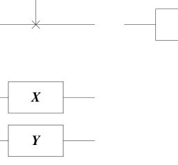
<figcaption class="paper-figure-caption"><b>Fig 1.</b> Figure 1: Quantum circuits of the commonly used two-qubit gates: (a) swap gate; (b) controlled-U gate; (c) zero-controlled-U gate; (d) X ⊗Y gate; (e) two-qubit multiplexer.</figcaption>
</figure>
<figure class="paper-figure-card">
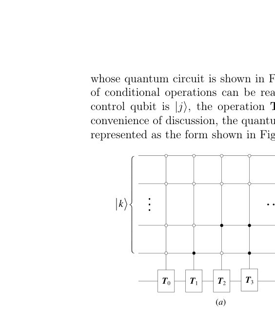
<figcaption class="paper-figure-caption"><b>Fig 2.</b> Figure 2: Quantum circuits of the quantum multiplexer: (a) Detailed circuit; (b) Simplified circuit.</figcaption>
</figure>
<figure class="paper-figure-card">
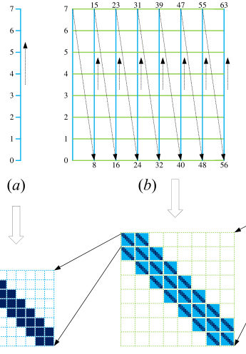
<figcaption class="paper-figure-caption"><b>Fig 3.</b> Figure 3: The fractal property of the matrices generated by the voxel grid: (a) Schematic of a 1-dimensional voxel grid with Ny = 8 nodes; (b) Schematic of a 2-dimensional voxel grid with Nx = 8, Ny = 8, and a total of 64 nodes; (c) Schematic of a 3-dimensional voxel grid with Nx = 8, Ny = 8, Nz = 8, and a total of 512 nodes; (d) Stiffness matrix generated by the 1-dimensional voxel grid in (a), where dark blue regions represent d-dimensional submatrices and white regions are zero; (e) Stiffness matrix generated by the 2-dimensional voxel grid in (b), where light blue regions represent submatrices corresponding to the 1- dimensional voxel grid and white regions are zero; (f) Stiffness...</figcaption>
</figure>
<figure class="paper-figure-card">
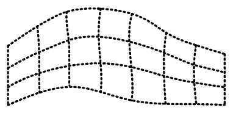
<figcaption class="paper-figure-caption"><b>Fig 4.</b> Figure 4: Voxel grids for irregular domains: (a) Homeomorphic voxel grid; (b) Regular voxel grid.</figcaption>
</figure>
<figure class="paper-figure-card">
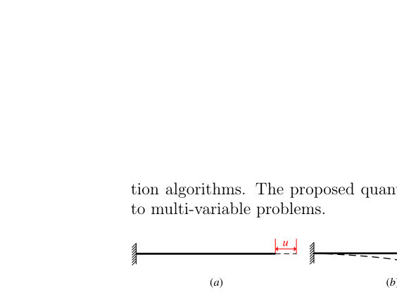
<figcaption class="paper-figure-caption"><b>Fig 5.</b> Figure 5: Deformation of a one-dimensional rod: (a) Single-bar tension problem, single- variable; (b) Pure bending problem, two-variable; (c) Combined tension and bending problem, three-variable.</figcaption>
</figure>
</div>
<p><strong>Summary.</strong> This paper introduces the Voxel-Based Quantum Computing Method (VBQC) to overcome the challenge of simulating solid mechanics Hamiltonians on irregular grids. It achieves this by exploiting the fractal structure of voxel-discretized matrices, leading to a specialized KCQ decomposition. The method is successfully demonstrated by calculating natural vibration frequencies and mode shapes for 1D, 2D, and 3D structures with high accuracy.</p>
<p><strong>Why it may be interesting.</strong> This work provides a concrete, structured quantum algorithm for a major class of physical problems (structural dynamics) that traditionally rely on complex numerical methods, demonstrating the potential of quantum simulation for continuum mechanics.</p>
<details>
<summary>Detailed structure</summary>
<p><strong>Main problem.</strong> The primary challenge is efficiently simulating the system matrix (Hamiltonian) for solid mechanics problems, which typically involve irregular spatial grids unsuitable for direct quantum simulation.</p>
<p><strong>Main result.</strong> The authors propose the Voxel-Based Quantum Computing Method (VBQC), which successfully simulates the time evolution operator $e^{iAt}$ for 1D, 2D, and 3D solid mechanics problems with high accuracy.</p>
<p><strong>Method.</strong> The method involves discretizing the domain using voxel grids to induce a tridiagonal fractal property in the system matrix. This allows for a decomposition (KCQ decomposition) which is then implemented using quantum circuits involving the Quantum Fourier Transform and quantum multiplexers.</p>
<p><strong>Model / system.</strong> The physical system is solid mechanics (e.g., beams, plates) whose dynamics are governed by a Hamiltonian derived from the system matrix $A$. The method handles complex geometries by using voxel grids and virtual nodes to maintain a structure suitable for quantum circuit encoding.</p>
<p><strong>Key observables.</strong> Natural vibration frequencies ($\omega_i$) and corresponding mode shapes ($\mathbf{x}_i$), as well as the time evolution operator $e^{iAt}$ itself.</p>
<p><strong>Important parameters / regimes.</strong> The complexity scales polynomially with the number of nodes/variables ($n_x + n_y + d$), and the accuracy is verified by comparing results across different time steps ($\Delta t$).</p>
<p><strong>Assumptions / limitations.</strong> The method assumes that the quantum multiplexer can be implemented with polynomial complexity, and that the basic matrix elements derived from the fractal structure can be mapped onto fundamental quantum gates.</p>
<p><strong>Figures summary.</strong> Figures illustrate the fractal structure of matrices for 1D, 2D, and 3D voxel grids, and show quantum circuits implementing the matrix exponential for various dimensions and variable counts.</p>
<p><strong>Paper structure.</strong> The paper first establishes the problem (solid mechanics on irregular grids) and proposes the VBQC. It details the mathematical foundation through the tridiagonal fractal property and the KCQ decomposition. Subsequently, it develops the quantum circuits for $e^{iAt}$ for increasing dimensions (1D, 2D, 3D) and finally verifies the method by comparing computed natural frequencies and mode shapes against classical reference solutions.</p>
</details>
<details>
<summary>Abstract</summary>
<p>Quantum computing presents a promising method to overcome the efficiency and memory constraints in large-scale mechanical problems, with numerous successful applications demonstrated in fluid mechanics. However, solid mechanics problems usually require irregular grids for spatial discretization, due to the Lagrange formulations and complex boundaries, which makes the quantum simulation of the system matrix, e.g., the mass or stiffness matrix which is often referred to as the Hamiltonian in quantum computing, difficult to be effectively conducted. This study proposes a voxel-based quantum computing method (VBQC) for the quantum simulation of Hamiltonians in solid mechanics. VBQC applies voxel grids to discretize the spatial domain, thereby enabling the system matrix to exhibit the tridiagonal fractal property. Based on this property, the system matrix can be decomposed into three groups of fundamental matrices, $\mathbf{k}_{n}$, $\mathbf{c}_{n}$, and $\mathbf{q}_{n}$. This decomposition process is referred to as the KCQ decomposition. By integrating the KCQ decomposition with the quantum Fourier transform and the quantum multiplexer, VBQC enables efficient quantum simulation of Hamiltonians in solid mechanics. Three specific solid problems with different dimensions and numbers of variables are applied to preliminarily verify the correctness of the proposed VBQC for solid mechanics problems.</p>
</details>
<p><sub><a href="#top">↑ back to top</a></sub></p>

<p><a id="paper-2606.03217"></a></p>
<h3 id="an-asymptotic-theory-of-chain-of-thought-in-in-context-learning"><a href="http://arxiv.org/abs/2606.03217v1">An Asymptotic Theory of Chain-of-Thought in In-Context Learning</a></h3>
<p><strong>Authors:</strong> Kaito Takanami, Cengiz Pehlevan<br>
<strong>Type:</strong> theory · <strong>Category:</strong> disordered systems and neural networks · <strong>PDF:</strong> <a href="https://arxiv.org/pdf/2606.03217v1">https://arxiv.org/pdf/2606.03217v1</a><br>
<strong>Analysis basis:</strong> full PDF text, analyzed in chunks</p>
<div class="figure-strip-hint">↔ Scroll figures horizontally</div>
<div class="paper-figures-scroll">
<figure class="paper-figure-card">
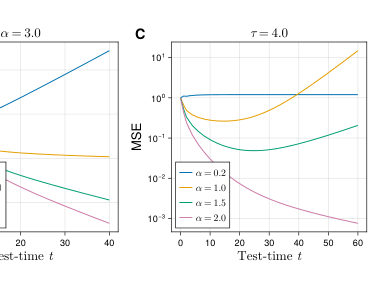
<figcaption class="paper-figure-caption"><b>Fig 1.</b> Figure 1: Phase diagram of the test-time scaling law and representative error dynamics. (A) Heatmap of theoretical prediction of the generalization error (MSE) at a fixed test-time depth t = 80. The diagram is divided into four regimes: (I) the overthinking regime, τ &lt; τc(α, σ2), where long test- time CoT amplifies the error; (II) the polynomial-decay regime, α &gt; 1 and τ = τc(α, σ2), where the error decreases only polynomially; (III) the saturation regime, 0 &lt; α &lt; 1 and τ &gt; τc(α, σ2), where the dynamics is stable but the error converges to a nonzero limit; and (IV) the exponential-decay regime, α &gt; 1 and τ &gt; τc(α, σ2), where the error decays exponentially to zero. (B,C) Theoretical...</figcaption>
</figure>
<figure class="paper-figure-card">
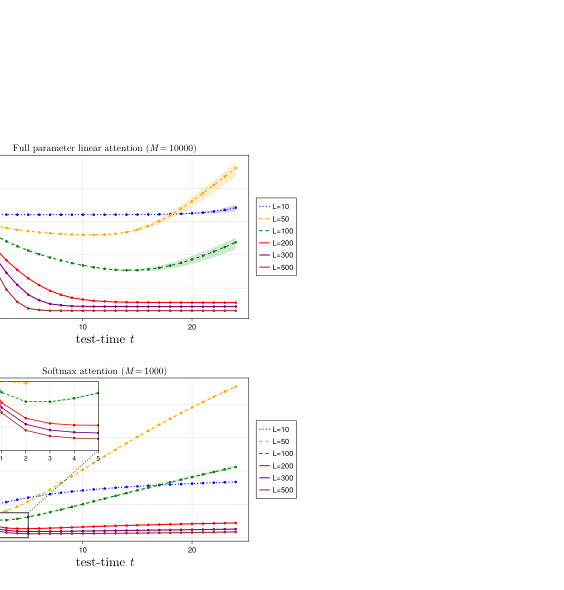
<figcaption class="paper-figure-caption"><b>Fig 2.</b> Figure 2: CoT experiments in the fully learned linear attention and softmax attention models. (A, C) Phase diagrams of the test-time generalization error at t = 20 as a function of the context length L and the number of training tasks M, for (A) the fully learned linear attention model and (C) the softmax attention model, respectively. (B, D) Test-time generalization error as a function of reasoning depth in the (B) fully learned linear attention model and (D) the softmax attention model, respectively. The solid curves correspond to an exponential decay regime, the dashed curves to an overthinking regime, and the dotted curves to a saturation regime. Parameters: (A-D) λ = 10−5, σ2 = 0, and...</figcaption>
</figure>
<figure class="paper-figure-card">
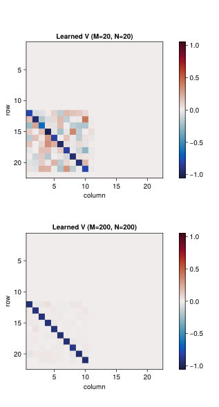
<figcaption class="paper-figure-caption"><b>Fig 3.</b> Figure 3: Heatmaps of the pretrained full-parameter matrices W and V. Parameters: (A,B) λ = 10−3, σ = 0.1 (A) M = N = 20, (B) M = N = 200.</figcaption>
</figure>
<figure class="paper-figure-card">
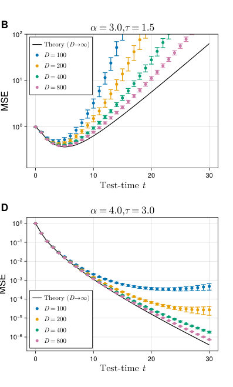
<figcaption class="paper-figure-caption"><b>Fig 4.</b> Figure 4: Comparison between the theoretical prediction and numerical experiments. The solid lines show the theoretical prediction in the D →∞limit, while scatter points show numerical results at finite D. Parameters: (A-D) λ = 10−5, σ = 0.01. Error bars represent the standard error of the mean over 5 trials per point.</figcaption>
</figure>
</div>
<p><strong>Summary.</strong> This paper provides a deep theoretical understanding of how the depth of Chain-of-Thought reasoning affects model generalization in In-Context Learning. Using random matrix theory on a simplified linear model, the authors derive an exact formula that predicts four distinct regimes of performance scaling. This work clarifies that the benefit of deep reasoning is highly dependent on the quality of pretraining and the amount of in-context examples provided.</p>
<p><strong>Why it may be interesting.</strong> The rigorous application of random matrix theory and asymptotic analysis to model the generalization dynamics of LLMs provides a powerful theoretical bridge between statistical physics/random matrix theory and modern deep learning theory.</p>
<details>
<summary>Detailed structure</summary>
<p><strong>Main problem.</strong> The paper addresses the poorly understood scaling behavior of generalization error when using Chain-of-Thought (CoT) reasoning within In-Context Learning (ICL) for large language models.</p>
<p><strong>Main result.</strong> It derives an exact asymptotic formula characterizing four distinct regimes of test-time error dynamics: exponential improvement, polynomial decay, saturation, and error amplification (overthinking).</p>
<p><strong>Method.</strong> The analysis employs tools from random matrix theory under high-dimensional asymptotics, modeling the CoT process as an iterative refinement of a weight-parameter estimate in a solvable linear regression model.</p>
<p><strong>Model / system.</strong> The system is a theoretically solvable model of CoT applied to in-context weight prediction in linear regression, analyzed via an attention mechanism structure. The analysis tracks the error dynamics as an iterative update $\hat{w}_{t+1} := 	ext{Read}(	ext{Atten}(P_t; 	heta^*))$.</p>
<p><strong>Key observables.</strong> Generalization error (MSE) as a function of reasoning depth ($t$), pretraining data amount, and context length ($\alpha$).</p>
<p><strong>Important parameters / regimes.</strong> Reasoning depth ($t$), context length ($\alpha$), task diversity ($  au$), and noise variance ($\sigma^2$).</p>
<p><strong>Assumptions / limitations.</strong> The analysis relies on a theoretically tractable model (linear regression) and the high-dimensional asymptotic limit ($D, M, L 	o \infty$).</p>
<p><strong>Figures summary.</strong> The figures summarize a phase diagram showing the four distinct regimes (exponential improvement, polynomial decay, saturation, overthinking) based on the relative values of task diversity ($    au$) versus a critical threshold ($   au_c$).</p>
<p><strong>Paper structure.</strong> The paper builds from establishing the iterative error dynamics using random matrix theory, deriving the asymptotic scaling law, identifying the phase transition points, and finally characterizing the optimal stopping depth ($t^*$) in the overthinking regime.</p>
</details>
<details>
<summary>Abstract</summary>
<p>Chain-of-thought (CoT) reasoning has become a widely used mechanism for eliciting multi-step reasoning in large language models by generating intermediate reasoning steps at inference time. Yet the scaling behavior of generalization with CoT depth remains poorly understood. To address this question, we study a theoretically solvable model of CoT for in-context weight prediction in linear regression, where test-time reasoning is represented as an iterative refinement of the weight-parameter estimate. Using tools from random matrix theory under high-dimensional asymptotics, we derive an exact formula for the generalization error as a function of reasoning depth, pretraining data amount, and context length. Our analysis reveals a sharp phase transition separating exponential and polynomial improvement, saturation, and overthinking, and characterizes how the optimal reasoning depth scales. We further show that deeper reasoning is most effective with sufficiently rich pretraining and in-context information, whereas limited pretraining or context makes longer reasoning prone to error amplification or saturation. We also validate these predictions through experiments on fully learned linear attention and softmax attention models. Our results provide a unified theoretical account of how test-time CoT depth affects generalization.</p>
</details>
<p><sub><a href="#top">↑ back to top</a></sub></p>

<p><a id="paper-2606.03612"></a></p>
<h3 id="an-efficient-quantum-hadamard-product-algorithm-for-functions"><a href="http://arxiv.org/abs/2606.03612v1">An efficient quantum Hadamard product algorithm for functions</a></h3>
<p><strong>Authors:</strong> Xinchi Huang, Hirofumi Nishi, Tomofumi Zushi, Yu-ichiro Matsushita<br>
<strong>Type:</strong> theory · <strong>Category:</strong> quantum information and computing · <strong>PDF:</strong> <a href="https://arxiv.org/pdf/2606.03612v1">https://arxiv.org/pdf/2606.03612v1</a><br>
<strong>Analysis basis:</strong> full PDF text, analyzed in chunks</p>
<div class="figure-strip-hint">↔ Scroll figures horizontally</div>
<div class="paper-figures-scroll">
<figure class="paper-figure-card">
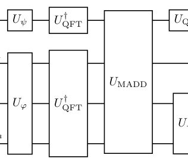
<figcaption class="paper-figure-caption"><b>Fig 1.</b> Figure 2: A novel quantum circuit for the QHP problem. Here, M = 2m is an approximation parameter which is determined in advance. UMADD is the quantum modular adder [5, Fig. 9] and U+1 is the quantum incrementer [6].</figcaption>
</figure>
<figure class="paper-figure-card">
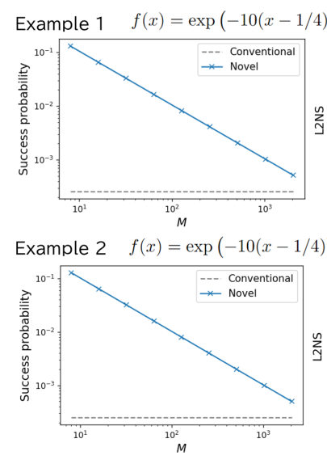
<figcaption class="paper-figure-caption"><b>Fig 2.</b> Figure 3: Success probabilities and L2NS errors for Examples 1 and 2 regarding the approximation parameter M. For Examples 1 and 2, the gray reference lines denote the orders O(1/M 3/2) and O(1/M 7/2), respectively.</figcaption>
</figure>
<figure class="paper-figure-card">
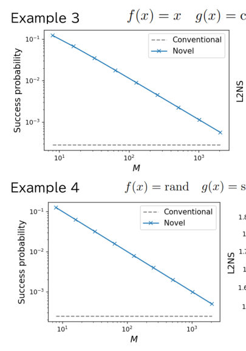
<figcaption class="paper-figure-caption"><b>Fig 3.</b> Figure 4: Success probabilities and L2NS errors for Examples 3 and 4 regarding the approximation parameter M. For Example 3, the gray reference line denotes the orders O(1/M 1/2).</figcaption>
</figure>
<figure class="paper-figure-card">
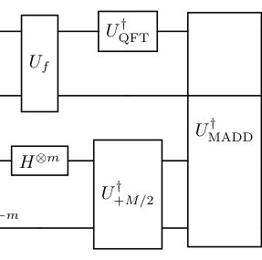
<figcaption class="paper-figure-caption"><b>Fig 4.</b> Figure 6: A novel quantum circuit for calculating the partial integral for two functions. Here, M ≤Nx is a given approximation parameter and m = log2 M. The last nt + nx qubits are post- selected to be |0⟩.</figcaption>
</figure>
<figure class="paper-figure-card">
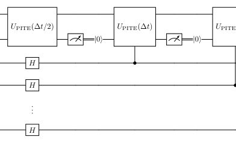
<figcaption class="paper-figure-caption"><b>Fig 5.</b> Figure 9: Quantum circuit for preparing the propagator by solving the MDE.</figcaption>
</figure>
</div>
<p><strong>Summary.</strong> This paper presents an efficient quantum algorithm for computing the Hadamard product state of two quantum states derived from functions. By transforming the problem into the Fourier domain, the authors circumvent the exponential scaling issues of conventional methods. This results in a quantum circuit whose complexity depends on the function's smoothness rather than the grid size, enabling simulations of large systems with high efficiency.</p>
<p><strong>Why it may be interesting.</strong> The development of algorithms that decouple computational complexity from the system size ($N$) by exploiting spectral properties (Fourier space) is a major theme in quantum computation, particularly for simulating physical systems.</p>
<details>
<summary>Detailed structure</summary>
<p><strong>Main problem.</strong> The paper addresses the challenge of efficiently preparing the quantum state corresponding to the Hadamard product of two quantum states, $|\psi
angle|\varphi
angle$, whose amplitudes are derived from discretized functions.</p>
<p><strong>Main result.</strong> The authors propose a Fourier-space based algorithm that achieves quantum complexity independent of the grid size $N$ if the underlying functions are sufficiently smooth or have finitely many non-zero Fourier coefficients.</p>
<p><strong>Method.</strong> The method transforms the non-unitary Hadamard product into a convolution structure in the Fourier basis, allowing the use of quantum modular adders and QFTs to compute the state efficiently.</p>
<p><strong>Model / system.</strong> The model involves quantum states $|\psi
angle_n$ and $|\varphi
angle_n$ whose amplitudes encode discretized functions $f$ and $g$ on a uniform grid of size $N$. Applications extend to calculating partial inner products and solving PDEs with periodic boundary conditions.</p>
<p><strong>Key observables.</strong> Success probability ($ ilde{P}<em L2NS>{   ext{suc}}$), $L_2$ Error ($   ext{Err}</em>$), and quantum query complexity.</p>
<p><strong>Important parameters / regimes.</strong> Grid number $N$, approximation parameter $M$, and the smoothness parameter $s$ related to the function's Fourier regularity.</p>
<p><strong>Assumptions / limitations.</strong> The analysis assumes the input functions are piecewise continuous and periodic, allowing the use of Fourier representations and approximations.</p>
<p><strong>Figures summary.</strong> Figures illustrate the conventional circuit (using CNOTs and post-selection) versus the novel Fourier-space circuit involving $    ilde{QFT}$, $   ext{UMADD}$, $  ext{QFT}$, and $    ext{U}+1$. Other figures show error and success probability decay rates.</p>
<p><strong>Paper structure.</strong> The paper first establishes the limitation of conventional methods for QHP. It then introduces the Fourier-space approach, detailing the multi-step quantum circuit involving QFTs and modular addition. Finally, it applies this technique to related problems like the partial inner product and solving differential equations.</p>
</details>
<details>
<summary>Abstract</summary>
<p>We propose an efficient quantum algorithm for preparing the Hadamard product state of two quantum states whose amplitudes are generated by functions on a uniform grid with grid number $N$. As the Hadamard product operation is non-unitary, the conventional approach generally suffer from a success probability that scales as $O(1/N)$, leading to an $O(\sqrt{N})$ query complexity even with quantum amplitude amplification. Our method exploits the Fourier-space representation of the input functions, where the Hadamard product can be treated through a convolution structure and approximated using localized Fourier coefficients. The resulting quantum circuit has complexity governed by the Fourier regularity of the underlying functions rather than directly by the grid number. In particular, when either of the input functions has finitely many non-zero Fourier coefficients, the algorithm prepares the exact quantum Hadamard product state under $N$-independent query complexity. Moreover, we also propose a novel quantum circuit for the partial inner product as one of its applications.</p>
</details>
<p><sub><a href="#top">↑ back to top</a></sub></p>

<p><a id="paper-2606.03981"></a></p>
<h3 id="bipolar-doped-superconducting-infinite-layer-cuprates"><a href="http://arxiv.org/abs/2606.03981v1">Bipolar-doped superconducting infinite-layer cuprates</a></h3>
<p><strong>Authors:</strong> Fengzhe Wang, Yueying Li, Heng Wang, Lizhi Xu, Xianfeng Wu, Lixiang Xu, Guangdi Zhou, Jin-Feng Jia, Peng Li, Haoliang Huang, Qi-Kun Xue, Zhuoyu Chen<br>
<strong>Type:</strong> experiment · <strong>Category:</strong> strongly correlated electrons · <strong>PDF:</strong> <a href="https://arxiv.org/pdf/2606.03981v1">https://arxiv.org/pdf/2606.03981v1</a><br>
<strong>Analysis basis:</strong> full PDF text, analyzed in chunks</p>
<div class="figure-strip-hint">↔ Scroll figures horizontally</div>
<div class="paper-figures-scroll">
<figure class="paper-figure-card">
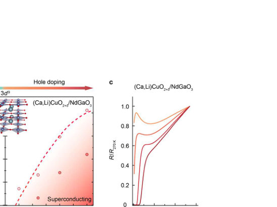
<figcaption class="paper-figure-caption"><b>Fig 1.</b> Figure 1 | Phase diagram of bipolar-doped infinite-layer cuprates. a, Normalized resistance- temperature curves (R–T) of representative electron-doped (Sr,Eu)CuO2 samples with nominal Eu doping levels of 9%, 11%, 14% and 16%. b, the bipolar-doped phase diagram of infinite-layer cuprates. The inset shows the schematic crystal structure of infinite layer phase. Open and closed circles mark the Tconset and Tc50%, which are defined as the temperatures at which the resistance deviated from the linear-fitted normal state resistance by 0.1% and 50%, respectively. c, The</figcaption>
</figure>
<figure class="paper-figure-card">
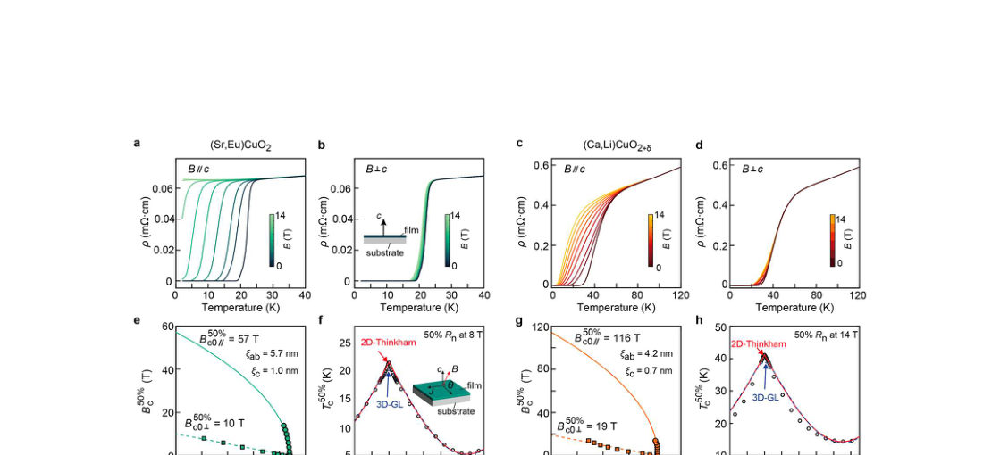
<figcaption class="paper-figure-caption"><b>Fig 2.</b> Figure 2 | Quasi-two-dimensional superconductivity in both electron- and hole-doped infinite- layer cuprates. a,b, R–T curves of an electron-doped Sr0.89Eu0.11CuO2 sample measured under out- of-plane (a) and in-plane (b) magnetic fields up to 14 T, revealing strong anisotropy. c,d, R–T curves for a hole-doped sample (grown under 0.06 mbar O3 partial pressure) under out-of-plane (c) and in- plane (d) fields. e, Temperature dependence of the upper critical field Bc50% for the electron-doped sample, extracted at 50% of the normal-state resistance Rn, in-plane (solid circles) and out-of-plane (solid squares). The solid and dashed lines represent a fit to the 2D Ginzburg–Landau (GL) formula for...</figcaption>
</figure>
<figure class="paper-figure-card">
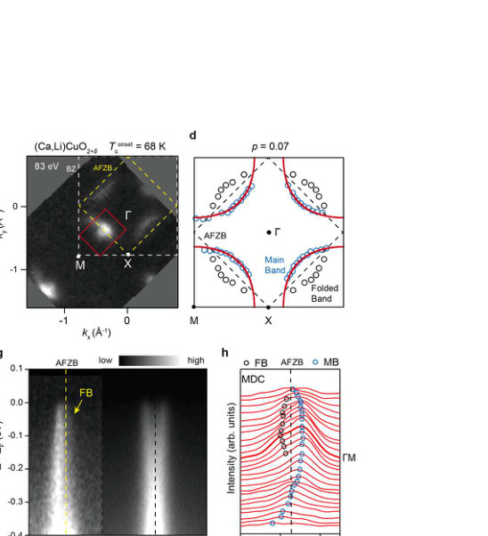
<figcaption class="paper-figure-caption"><b>Fig 3.</b> Figure 3 | Electronic structure of electron- and hole-doped infinite-layer cuprate films. a,c,</figcaption>
</figure>
<figure class="paper-figure-card">
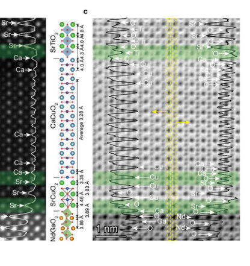
<figcaption class="paper-figure-caption"><b>Fig 4.</b> Figure 4 | Structural characterization of infinite-layer cuprates. a, X-ray diffraction θ–2θ scans of a c-axis-oriented (Sr,Eu)CuO2 film grown on GdScO3 substrate (top, blue) and a (Ca,Li)CuO2+δ film grown on NdGaO3 substrate (bottom, red). Only (00l) Bragg reflections are observed, confirming phase-pure epitaxial growth with [00l] orientation. b, Cross-sectional high-angle annular dark-field (HAADF) scanning transmission electron microscopy (STEM) image of a NdGaO3/3- unit-cell (UC) SrCuO2/13-UC CaCuO3 stack capped with a SrTiO3 capping layer, viewed along the [100]pc zone axis. Horizontal, green-shaded bands mark the heterointerfaces; vertical yellow dashed boxes indicate atomic columns...</figcaption>
</figure>
</div>
<p><strong>Summary.</strong> This work reports on the synthesis and characterization of bipolar-doped infinite-layer cuprates, providing an unprecedented platform to study high-temperature superconductivity. By combining ARPES and transport measurements, the authors demonstrate the intrinsic coexistence of antiferromagnetic order and superconductivity in both electron- and hole-doped regimes. This research significantly advances the understanding of the magnetic mechanisms underlying cuprate superconductivity.</p>
<p><strong>Why it may be interesting.</strong> The definitive platform established by this work—allowing the study of both electron and hole doping regimes on the same material type—provides crucial, clean data for theorists attempting to build a unified theory of high-Tc superconductivity.</p>
<details>
<summary>Detailed structure</summary>
<p><strong>Main problem.</strong> The primary challenge is isolating the intrinsic superconducting physics of the $ ext{CuO}_2$ plane from the complexities introduced by charge-reservoir layers in high-temperature cuprate superconductors.</p>
<p><strong>Main result.</strong> The authors successfully realized bipolar doping in infinite-layer cuprates, demonstrating that antiferromagnetic band folding coexists with high-temperature superconductivity ($T_{c	ext{onset}} > 60 	ext{ K}$) at a specific hole doping level ($p=0.07$).</p>
<p><strong>Method.</strong> The study employed a combination of advanced experimental techniques, including Angle-Resolved Photoemission Spectroscopy (ARPES), transport measurements (R-T curves), and Scanning Transmission Electron Microscopy (STEM) on single-crystalline thin films.</p>
<p><strong>Model / system.</strong> The research focuses on infinite-layer cuprates, specifically electron-doped $(	ext{Sr},	ext{Eu})	ext{CuO}_2$ and hole-doped $(	ext{Ca},	ext{Li})	ext{CuO}_{2+\delta}$ single-crystalline thin films, which serve as a platform to study the interplay between magnetism and superconductivity.</p>
<p><strong>Key observables.</strong> Electrical resistance anisotropy, superconducting transition temperature ($T_{c	ext{onset}}$), Fermi surface topology (single surface), and the presence/nature of antiferromagnetic (AFM) band folding.</p>
<p><strong>Important parameters / regimes.</strong> Hole doping level ($p=0.07$), electron doping level ($   ext{Eu} \approx 0.11$), and the superconducting critical temperature ($T_c$).</p>
<p><strong>Assumptions / limitations.</strong> The analysis assumes that the observed phenomena are intrinsic to the $  ext{CuO}_2$ plane, and the superconducting response can be modeled using 2D Ginzburg-Landau theory.</p>
<p><strong>Figures summary.</strong> Figures illustrate the bipolar-doped phase diagram via R-T curves, demonstrate strong 2D anisotropy in superconductivity, and use ARPES to map the Fermi surface showing coexisting AFM folding and superconductivity.</p>
<p><strong>Paper structure.</strong> The paper systematically presents the realization of bipolar doping, characterizes the electronic structure using ARPES to map the phase diagram, and uses transport/structural measurements to confirm the quasi-2D nature and the coexistence of magnetic order and superconductivity.</p>
</details>
<details>
<summary>Abstract</summary>
<p>Distilling the intrinsic physics of the superconducting CuO2 plane from the complexities of charge-reservoir layers is a defining challenge in high-temperature superconductivity. While superconducting electron-doped infinite-layer cuprates have been synthesized, controllable and uniform hole doping has long remained elusive despite exploratory attempts, limiting spectroscopic insights. Here, we realize bipolar doping across infinite-layer (Sr,Eu)CuO2 and (Ca,Li)CuO2+δ single-crystalline thin films, mapping the electronic phase diagram. Both electron- and hole-doped films show pronounced electrical resistance anisotropy, indicating the quasi-two-dimensional nature of the CuO2 planes. Angle-resolved photoemission spectroscopy across electron- and hole-doped regimes reveals persistent antiferromagnetic band folding coexisting with superconductivity. Remarkably, at a hole doping ~0.07 determined by Luttinger volume, the antiferromagnetic folding emerges from Fermi arcs within the film's single Fermi surface, with the onset superconducting transition temperature exceeding 60 K. These findings redefine the interplay between magnetic order and superconductivity and establish a definitive platform to investigate the intrinsic mechanism of high-temperature superconducting cuprates.</p>
</details>
<p><sub><a href="#top">↑ back to top</a></sub></p>

<p><a id="paper-2606.03507"></a></p>
<h3 id="full-extractors-for-logical-processing-in-hypergraph-product-codes"><a href="http://arxiv.org/abs/2606.03507v1">Full Extractors for Logical Processing in Hypergraph Product Codes</a></h3>
<p><strong>Authors:</strong> John Blue, Zhiyang He, Hengyun Zhou, Isaac L. Chuang<br>
<strong>Type:</strong> theory · <strong>Category:</strong> quantum information and computing · <strong>PDF:</strong> <a href="https://arxiv.org/pdf/2606.03507v1">https://arxiv.org/pdf/2606.03507v1</a><br>
<strong>Analysis basis:</strong> full PDF text, analyzed in chunks</p>
<div class="figure-strip-hint">↔ Scroll figures horizontally</div>
<div class="paper-figures-scroll">
<figure class="paper-figure-card">
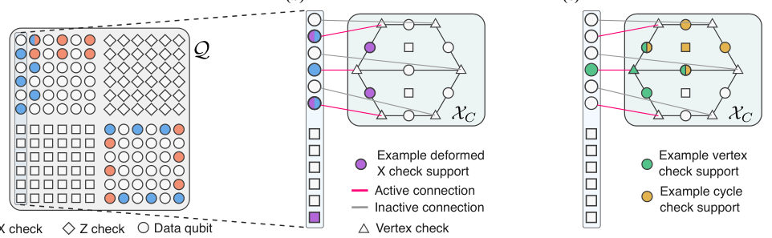
<figcaption class="paper-figure-caption"><b>Fig 1.</b> FIG. 1. (a) An HGP code Q with example logical X and Z operators highlighted. Note that the layout of the HGP code is purely for visualization purposes and does not correspond to a physical layout. The cyclic HGP code depicted uses the check matrix H which is the binary circulant matrix corresponding to h(x) = 1 + x2 and is a [[72, 4, 3]] code. (b) A single-column extractor XC used to measure logical Z operators supported on the first column of the left block. The activated connections between the extractor and the first column used to measure the shown logical Z operator are highlighted in pink, and the inactive connections are shown in light gray. (c) Example supports of a vertex check...</figcaption>
</figure>
<figure class="paper-figure-card">

<figcaption class="paper-figure-caption"><b>Fig 2.</b> FIG. 2. (a) A Z extractor (XZ), capable of measuring any logical Z operator on the base code Q. The Z extractor is formed by connecting k single-column extractors with bridges. Lines between the extractor and base code show how they are connected, e.g. the vertex checks of the first column of XZ are connected to the first column of the left block and the first row of the right block of Q. The connections between XZ and the rows of the right block are governed by the permutation σ. (b) Connecting an X extractor (XX) and a Z extractor (XZ) with a bridge B to form a full extractor.</figcaption>
</figure>
<figure class="paper-figure-card">

<figcaption class="paper-figure-caption"><b>Fig 3.</b> FIG. 3. Logical error rates of the [[882, 50, 10]] HGP code and extractor system used to measure a randomly sampled element of {I, X, Y, Z}⊗50. For the extractor system, “Meas” refers to the error rate of the logical measurement, and “Block” refers to the logical error rate of the other 49 logical qubits during the experiment. Note that the shown logical error rates are not normalized per round or per logical qubit. Error bars indicate 95% Agresti-Coull confidence intervals. (a) A comparison of the logical error rates for the base HGP code, and the HGP+extractor system. For the base code, the y axis shows the logical error of a Z-basis memory experiment with sixteen rounds of syndrome...</figcaption>
</figure>
<figure class="paper-figure-card">

<figcaption class="paper-figure-caption"><b>Fig 4.</b> FIG. 4. Canonical basis of logical operators for HGP(∂A, ∂B), illustrated on a small representative instance (nA=nB=6, mA=mB=4). Each logical qubit (i, j) is associated with an information qubit at which its paired ¯Z and ¯ X operators intersect. On the left block, ¯ZL ij occupies information column j (sparse, along the codeword cA,i ∈ker ∂A) while ¯ XL ij occupies information row i (sparse, along cB,j ∈ker ∂B). On the right block the roles of rows and columns are exchanged, with codewords drawn from the transpose codes ker ∂⊤ A and ker ∂⊤ B. Light shading indicates the information rows/columns; the unique ¯Z– ¯ X intersection (violet) is the information qubit.</figcaption>
</figure>
<figure class="paper-figure-card">

<figcaption class="paper-figure-caption"><b>Fig 5.</b> FIG. 5. Structure of code surgery and its constituent definitions (Appendix E). An ancilla system (A, f, D) consists of a CSS ancilla code A (drawn as a graph: vertices = AZ, edges = ancilla qubits, cycles = AX) together with a port function f : supp(P) →AZ satisfying im(f) ⊂supp(c), where c is the unique nonzero element of ker H⊤ Z , and a deformation map D : S →P(E) assigning each base-code stabilizer a path matching of K(S) in the ancilla graph G. Logical measurement is performed by measuring the stabilizers of the deformed code Q′ whose checks can be classified into three groups: vertex checks (each Z-check of A augmented by the Paulis L(q) for code qubits mapped to it by f); cycle...</figcaption>
</figure>
</div>
<p><strong>Summary.</strong> This paper introduces 'full extractors' designed to enable arbitrary logical Pauli measurements on Hypergraph Product (HGP) quantum codes. By assembling partial extractors, the authors demonstrate a method that maintains high space efficiency and low, fixed connectivity, crucial for scaling fault-tolerant quantum computers. The results show that this architecture achieves low logical error rates comparable to the base code without the overhead penalties of prior methods.</p>
<p><strong>Why it may be interesting.</strong> This work provides concrete, resource-aware architectural blueprints for implementing complex logical operations on near-term quantum hardware by optimizing the overhead associated with fault-tolerance.</p>
<details>
<summary>Detailed structure</summary>
<p><strong>Main problem.</strong> The paper addresses the need for practical, low-overhead logical processing methods for Quantum Low-Density Parity-Check (QLDPC) codes required for large-scale fault-tolerant quantum computation.</p>
<p><strong>Main result.</strong> They construct 'full extractors' for Hypergraph Product (HGP) codes that achieve space efficiencies of 50-80% of the base code while supporting fixed, low-degree connectivity and avoiding compilation overhead.</p>
<p><strong>Method.</strong> The methodology involves assembling full extractors by connecting multiple verifiable partial extractors, utilizing graph theory and algebraic structures derived from the HGP code's homology/cohomology groups.</p>
<p><strong>Model / system.</strong> The system analyzed is the Hypergraph Product (HGP) code, a type of CSS QLDPC code. The core components are the base HGP code, the X-basis extractor, the Z-basis extractor, and the resulting full extractor structure.</p>
<p><strong>Key observables.</strong> Logical measurement error rates (e.g., $\approx 10^{-6}$ at $p=0.1\%$), space overhead (50-80% of base code), and maximum qubit degree (ten).</p>
<p><strong>Important parameters / regimes.</strong> Physical error rate ($p$), code distance ($d=10$), and the number of merged rounds ($N_R$).</p>
<p><strong>Assumptions / limitations.</strong> The analysis assumes the existence of distance-preserving single-column extractors and relies on the ability to assemble these partial extractors into a full system.</p>
<p><strong>Figures summary.</strong> Figures illustrate the structure of HGP codes, the construction of Z and X extractors, and the final full extractor connecting these components. Figure 9 compares logical measurement error rates between different decoding schemes.</p>
<p><strong>Paper structure.</strong> The paper progresses by first establishing the need for logical processing in QLDPC codes, then detailing the construction of single-column and basis extractors using graph theory and algebraic invariants. It culminates in proving the fault tolerance and efficiency of the full extractor, followed by performance comparisons with existing decoding methods.</p>
</details>
<details>
<summary>Abstract</summary>
<p>Quantum low-density parity-check (QLDPC) codes are promising candidates for practical low-overhead quantum memories. For large-scale fault-tolerant quantum computation, we further need logical processing methods for QLDPC codes. In this work, we construct full extractors -- surgery systems capable of measuring arbitrary logical Pauli operators on a code block -- for several hypergraph product (HGP) codes. These extractors enable logical processing via Pauli-based computation (PBC) without the compilation overhead observed in prior works. Moreover, our extractors have sizes between 50% and 80% of the base HGP codes, and the extractor-augmented codes can be supported on fixed connectivity hardware with maximum qubit degree ten. Our approach involves assembling many partial extractors with verifiable fault-tolerance into a single full extractor. For a distance 10 HGP code, circuit-level noise simulations yield logical measurement error rates of approximately $10^{-6}$ at a physical error rate of 0.1%. These results demonstrate that extractor architectures, when designed in the fixed-connectivity setting, can achieve the space efficiency of QLDPC codes without introducing compilation overhead compared to surface code PBC architectures.</p>
</details>
<p><sub><a href="#top">↑ back to top</a></sub></p>

<p><a id="paper-2606.02697"></a></p>
<h3 id="machine-learning-based-quantum-error-mitigation-for-variational-algorithms"><a href="http://arxiv.org/abs/2606.02697v1">Machine Learning-based Quantum Error Mitigation for Variational Algorithms</a></h3>
<p><strong>Authors:</strong> Nikita Korolev, Kirill Lakhmanskiy, Daniil Rabinovich<br>
<strong>Type:</strong> theory · <strong>Category:</strong> quantum information and computing · <strong>PDF:</strong> <a href="https://arxiv.org/pdf/2606.02697v1">https://arxiv.org/pdf/2606.02697v1</a><br>
<strong>Analysis basis:</strong> full PDF text, analyzed in chunks</p>
<div class="figure-strip-hint">↔ Scroll figures horizontally</div>
<div class="paper-figures-scroll">
<figure class="paper-figure-card">

<figcaption class="paper-figure-caption"><b>Fig 1.</b> FIG. 1. The dataset generation protocol scheme tailored to the TwoLocal ansatz. Yellow single-qubit gates Ui represent random Haar unitaries.</figcaption>
</figure>
<figure class="paper-figure-card">

<figcaption class="paper-figure-caption"><b>Fig 2.</b> FIG. 3. Noiseless, noisy and mitigated cost landscapes with two random parameters varied in range (−π, π) under com- posite noise (a) and Pauli noise (b) with strength p = 0.05.</figcaption>
</figure>
<figure class="paper-figure-card">

<figcaption class="paper-figure-caption"><b>Fig 3.</b> FIG. 2. VQE optimization dynamics for the depolarizing noise model (p = 0.01). Shown are noiseless (blue), noisy (red), obtained under mitigated optimization (green) and post-optimization mitigation (purple) values. The overlap of the mitigated curves demonstrates that in-loop mitigation does not improve convergence compared to post-optimization correction.</figcaption>
</figure>
<figure class="paper-figure-card">

<figcaption class="paper-figure-caption"><b>Fig 4.</b> FIG. 4. Absolute error |Eideal−ˆE| distribution for each considered noise model with corresponding noise strength 0.05 Here ML-QEM depicts the results of best acquired models for each case, i.e. Ridge regression trained on near-Clifford data for depolarization (a), Pauli noise (b), and Ridge regression trained on Clifford data for the composite noise model (c).</figcaption>
</figure>
</div>
<p><strong>Summary.</strong> This paper introduces a practical Machine Learning-based Quantum Error Mitigation (ML-QEM) protocol for Variational Quantum Algorithms (VQAs). By generating training data from near-Clifford circuits, it creates a robust model capable of correcting for noise across different parameters and Hamiltonians. Benchmarking shows this method significantly suppresses errors, often surpassing standard Zero-Noise Extrapolation on current NISQ devices.</p>
<p><strong>Why it may be interesting.</strong> This work directly addresses the primary bottleneck for near-term quantum computation—noise—by providing a data-driven, hardware-agnostic mitigation technique applicable to variational algorithms.</p>
<details>
<summary>Detailed structure</summary>
<p><strong>Main problem.</strong> The core problem is improving the performance of Variational Quantum Algorithms (VQAs) running on noisy quantum hardware by implementing practical Quantum Error Mitigation (QEM).</p>
<p><strong>Main result.</strong> The proposed ML-QEM protocol achieves consistent, several-fold error suppression across various noise models and outperforms standard Zero-Noise Extrapolation (ZNE) in the high-noise regime.</p>
<p><strong>Method.</strong> The authors train Machine Learning models (like Ridge regression or XGBoost) on data generated from simulating near-Clifford circuits to map noisy Pauli string expectation values to their ideal, noiseless counterparts.</p>
<p><strong>Model / system.</strong> The work focuses on VQAs, specifically using the Variational Quantum Eigensolver (VQE) to find the ground state energy of the Sherrington-Kirkpatrick Hamiltonian on up to 12 qubits.</p>
<p><strong>Key observables.</strong> Energy expectation values ($\langle P_\alpha 
angle$), cost function $C(	heta)$, and error suppression factors.</p>
<p><strong>Important parameters / regimes.</strong> Noise strengths ($p$), qubit number ($n \le 12$), and noise models (Depolarizing, Pauli, Composite).</p>
<p><strong>Assumptions / limitations.</strong> The primary assumption is that training data can be generated practically using near-Clifford circuits, overcoming the need for inaccessible noiseless data.</p>
<p><strong>Figures summary.</strong> Figures compare VQE optimization dynamics (Noisy vs. Mitigated) and show error distributions, while Tables compare RMSE and error suppression factors across different noise types and noise strengths.</p>
<p><strong>Paper structure.</strong> The paper progresses by defining the problem (VQA noise), detailing the ML-QEM formulation, proposing a practical data generation protocol using near-Clifford circuits, and finally benchmarking the method against ZNE across multiple noise models.</p>
</details>
<details>
<summary>Abstract</summary>
<p>Machine Learning-based quantum error mitigation (ML-QEM) has emerged as a promising approach for improving the performance of noisy quantum algorithms. However, existing ML-QEM methods often have restricted applicability to variational circuits and rely on inaccessible noiseless training data. In this work, we propose a practical ML-QEM protocol tailored to variational quantum algorithms, which generates training data by simulating (near-)Clifford circuits. This data is used for model selection and training, producing a mitigation model that can correct variational circuits with arbitrary parameters and transfer across different target Hamiltonians of similar structure. We benchmark the proposed method on the Variational Quantum Eigensolver (VQE) task for the Sherrington-Kirkpatrick Hamiltonian of up to $n=12$ qubits under various noise models, analyzing its effect on trainability and comparing its performance against standard Zero-Noise Extrapolation (ZNE). The results demonstrate consistent several-fold error suppression across all tested settings and superior performance over ZNE in the high-noise regime, providing evidence for the applicability of the proposed protocol to present-day NISQ processors.</p>
</details>
<p><sub><a href="#top">↑ back to top</a></sub></p>

<p><a id="paper-2606.03643"></a></p>
<h3 id="on-the-local-equivalence-of-trapped-ion-two-qudit-gates"><a href="http://arxiv.org/abs/2606.03643v1">On the local equivalence of trapped-ion two-qudit gates</a></h3>
<p><strong>Authors:</strong> Nikita V. Semenin, Pavel A. Kamenskikh, Ilia V. Zalivako, Anastasiia S. Nikolaeva, Evgeniy O. Kiktenko<br>
<strong>Type:</strong> theory · <strong>Category:</strong> other · <strong>PDF:</strong> <a href="https://arxiv.org/pdf/2606.03643v1">https://arxiv.org/pdf/2606.03643v1</a><br>
<strong>Analysis basis:</strong> full PDF text, analyzed in chunks</p>
<div class="figure-strip-hint">↔ Scroll figures horizontally</div>
<div class="paper-figures-scroll">
<figure class="paper-figure-card">

<figcaption class="paper-figure-caption"><b>Fig 1.</b> Figure 1: Schematic proof of the Theorem on the local equivalence of two-qudit gates using tensor network notation. QX and PX denote the left and right unitary matrices obtained from the singular value decomposition of the matrix X.</figcaption>
</figure>
<figure class="paper-figure-card">

<figcaption class="paper-figure-caption"><b>Fig 2.</b> Figure 2: Decomposition of UMS(π) into U (0) LS (π) using local unitaries for d = 3</figcaption>
</figure>
</div>
<p><strong>Summary.</strong> This paper establishes a necessary condition for the local equivalence of two-qudit quantum gates by analyzing the singular values of their reshuffled matrices. Applying this to trapped-ion gates, the authors find that the widely used Mølmer-Sørensen and Light-Shift gates are only locally equivalent under specific conditions ($d=3, \chi=\pi$). This provides crucial theoretical constraints for implementing quantum gates in qudit systems.</p>
<p><strong>Why it may be interesting.</strong> This work provides rigorous theoretical tools (Schmidt number analysis) to classify the fundamental equivalence of gates used in trapped-ion quantum computation, directly impacting the design and understanding of quantum gates in AMO platforms.</p>
<details>
<summary>Detailed structure</summary>
<p><strong>Main problem.</strong> The paper derives a necessary condition to determine when two two-qudit quantum gates are locally equivalent, and applies this to compare the Mølmer-Sørensen (MS) and Light-Shift (LS) gates.</p>
<p><strong>Main result.</strong> The MS and zero-order LS gates are only locally equivalent when the qudit dimension is $d=3$ and the nonlocal phase is $\chi=\pi$. For $d>3$, they are proven to be non-equivalent.</p>
<p><strong>Method.</strong> The analysis relies on comparing the singular value spectra (Schmidt coefficients) of the reshuffled gate matrices, $R(U)$, which provides a necessary condition for local equivalence.</p>
<p><strong>Model / system.</strong> The study concerns quantum gates acting on qudits within a trapped-ion system. It specifically compares the Mølmer-Sørensen (MS) gate and the zero-order Light-Shift (LS) gate.</p>
<p><strong>Key observables.</strong> The operator Schmidt coefficients, $   ext{sv}(R(U))$, and the squared nonzero Schmidt coefficients ($\lambda^2_{LS}(\chi)$ and $\lambda^2_{MS}(\chi)$).</p>
<p><strong>Important parameters / regimes.</strong> Qudit dimension ($d$), and the nonlocal phase ($\chi$).</p>
<p><strong>Assumptions / limitations.</strong> The derived condition based on Schmidt spectra is necessary but not sufficient for local equivalence. The analysis initially ignores local phases.</p>
<p><strong>Figures summary.</strong> Figure 1 provides a schematic proof of the local equivalence theorem using tensor network notation, and Figure 2 illustrates the decomposition of the MS gate into the LS gate using local unitaries for the $d=3, \chi=\pi$ case.</p>
<p><strong>Paper structure.</strong> The paper first establishes the general necessary condition for local equivalence using singular values. It then applies this condition to the MS and LS gates, analyzing the general case ($d>2$) and the specific case ($\chi=\pi$) to derive the final equivalence criteria.</p>
</details>
<details>
<summary>Abstract</summary>
<p>We derive a necessary condition of the local equivalence between two-qudit gates in terms of singular values of transformed gate matrices. This condition is valid for arbitrary qudit dimensions $d$ and is thus a relatively simple general way of checking whether two gates can be reduced to one another with single-qudit (local) gates. We use this condition to investigate the local equivalence of two widely used trapped-ion two-qubit gates in qudit space: the Molmer-Sorensen (MS) gate and a special case of the Light-Shift (LS) gate, both of which we studied in one of our previous works.</p>
</details>
<p><sub><a href="#top">↑ back to top</a></sub></p>

<p><a id="paper-2606.03226"></a></p>
<h3 id="perturbative-results-for-fractional-quantum-mechanics"><a href="http://arxiv.org/abs/2606.03226v1">Perturbative results for fractional quantum mechanics</a></h3>
<p><strong>Authors:</strong> Claude Semay, Clara Tourbez, Loïc Keszeli<br>
<strong>Type:</strong> theory · <strong>Category:</strong> other · <strong>PDF:</strong> <a href="https://arxiv.org/pdf/2606.03226v1">https://arxiv.org/pdf/2606.03226v1</a><br>
<strong>Analysis basis:</strong> full PDF text, analyzed in chunks</p>
<div class="figure-strip-hint">↔ Scroll figures horizontally</div>
<div class="paper-figures-scroll">
<figure class="paper-figure-card">

<figcaption class="paper-figure-caption"><b>Fig 1.</b> Low-resolution page preview, page 2</figcaption>
</figure>
<figure class="paper-figure-card">

<figcaption class="paper-figure-caption"><b>Fig 2.</b> Low-resolution page preview, page 3</figcaption>
</figure>
<figure class="paper-figure-card">

<figcaption class="paper-figure-caption"><b>Fig 3.</b> Low-resolution page preview, page 4</figcaption>
</figure>
<figure class="paper-figure-card">

<figcaption class="paper-figure-caption"><b>Fig 4.</b> Low-resolution page preview, page 5</figcaption>
</figure>
<figure class="paper-figure-card">

<figcaption class="paper-figure-caption"><b>Fig 5.</b> Low-resolution page preview, page 6</figcaption>
</figure>
</div>
<p><strong>Summary.</strong> This paper theoretically examines the fractional Schrödinger equation by treating small deviations in the kinetic energy term. It compares the results obtained from standard perturbation theory against the Envelope Theory for the harmonic oscillator and Kepler problem. The good agreement between methods suggests the utility of these techniques for analyzing complex, non-standard quantum systems.</p>
<p><strong>Why it may be interesting.</strong> The application of advanced theoretical techniques like the Envelope Theory to fractional quantum mechanics provides new analytical tools for studying non-standard quantum dynamics, which is relevant for understanding modified Hamiltonians in various physical contexts.</p>
<details>
<summary>Detailed structure</summary>
<p><strong>Main problem.</strong> The paper investigates the fractional Schrödinger equation, specifically analyzing the effects of small deviations in the kinetic energy term from the standard nonrelativistic form.</p>
<p><strong>Main result.</strong> The analytical results demonstrate good agreement between standard perturbation theory and the envelope theory when applied to the harmonic oscillator and the Kepler problem.</p>
<p><strong>Method.</strong> The study employs both standard perturbation theory and the Envelope Theory (ET) to calculate energy corrections for the fractional Hamiltonian.</p>
<p><strong>Model / system.</strong> The model is based on the fractional Hamiltonian $H = D_\alpha |p|^\alpha + V(r)$, where $\alpha = 2 + \epsilon$ and $\epsilon$ is small. Specific systems analyzed include the harmonic oscillator and the Kepler problem (Hydrogen atom).</p>
<p><strong>Key observables.</strong> Energy corrections ($\Delta E$) for the ground state, and spectral bounds for the entire spectrum.</p>
<p><strong>Important parameters / regimes.</strong> The small parameter $\epsilon$ characterizing the deviation in the kinetic energy, and physical constants like $\hbar, m, \omega, e^2$.</p>
<p><strong>Assumptions / limitations.</strong> The analysis relies on treating the fractional term as a small perturbation ($\epsilon \ll 1$) and utilizes the Envelope Theory approximation.</p>
<p><strong>Paper structure.</strong> The paper proceeds by setting up the fractional Hamiltonian, applying perturbation theory and the envelope theory to specific solvable models (Harmonic Oscillator and Kepler Problem), comparing the results, and discussing potential extensions to many-body systems.</p>
</details>
<details>
<summary>Abstract</summary>
<p>The fractional Schrödinger equation is studied with a kinetic energy that slightly deviates from the usual nonrelativistic form. The harmonic oscillator and the Kepler problem are both treated in the context of small perturbations. The usual perturbation theory is used and compared with the envelope theory. The analytical results show good agreement between both methods, indicating possible future developments for many-body systems. A possible connection with experimental observations is briefly discussed.</p>
</details>
<p><sub><a href="#top">↑ back to top</a></sub></p>

<p><a id="paper-2606.03916"></a></p>
<h3 id="practical-gates-by-majorana-fermion-motion"><a href="http://arxiv.org/abs/2606.03916v1">Practical gates by Majorana fermion motion</a></h3>
<p><strong>Authors:</strong> Yuri D. Lensky, Bryce Kobrin, Kostyantyn Kechedzhi, Igor Aleiner<br>
<strong>Type:</strong> theory · <strong>Category:</strong> quantum information and computing · <strong>PDF:</strong> <a href="https://arxiv.org/pdf/2606.03916v1">https://arxiv.org/pdf/2606.03916v1</a><br>
<strong>Analysis basis:</strong> full PDF text, analyzed in chunks</p>
<div class="figure-strip-hint">↔ Scroll figures horizontally</div>
<div class="paper-figures-scroll">
<figure class="paper-figure-card">

<figcaption class="paper-figure-caption"><b>Fig 1.</b> FIG. 1. Several memories written in terms of Majorana fermions. The vertical dimension in all the figures is d (in the metric described in the main text), and is 2d (d) for Figs. 1b and 1c (Fig. 1a). The wavy lines are Wilson lines (see main text). A choice for which Pauli operator they correspond in the logical encoding is shown in Figs. 1a and 1b. All blue and yellow Wilson lines have the same length.</figcaption>
</figure>
<figure class="paper-figure-card">

<figcaption class="paper-figure-caption"><b>Fig 2.</b> FIG. 3. Outline of the steps of the Majorana embedding, described in more detail in [2]. First, a set of arrowed tetrahedra for n qubits is actually a diagrammatic representation of a specific embedding of their Hilbert space into that of 4n Majorana fermions. Majorana bilinears associated to a single qubit, shown with colors here and elsewhere, are images of Pauli operators under this embedding. This requires a choice of ordering on the bilinears, represented as arrows in the picture. The choice of such arrows gives rise to a background gauge field we call Z(K) 2 . The systematic procedure for choosing a gauge and physical consequences of this gauge field are discussed in [2], and for...</figcaption>
</figure>
<figure class="paper-figure-card">

<figcaption class="paper-figure-caption"><b>Fig 3.</b> FIG. 4. An example code where code distance is determined by the ’t Hooft line shown in green, that is shorter than the Wilson line shown in blue. Pauli Z label errors that correspond to the ’t Hooft line. Following the rules of Sec. II we determine that ℓH = 3 whereas ℓW = 5. We also show an example Wilson line in red, which has one end on an undimerized Majorana fermion and another on a dimerized one. The procedure for writing Wilson lines as Pauli strings is detailed in [2].</figcaption>
</figure>
<figure class="paper-figure-card">

<figcaption class="paper-figure-caption"><b>Fig 4.</b> FIG. 5. Majorana graph for a small instance of dense mem- ory. Blue and yellow lines show Wilson line undetectable errors, see Fig. 1(c).</figcaption>
</figure>
<figure class="paper-figure-card">

<figcaption class="paper-figure-caption"><b>Fig 5.</b> FIG. 7. Virtual particle motion for Majorana fermions. We move the Majorana fermion at the top middle to the location indicated by the dashed line. The blue lines indicate the Majorana fermion pairs created from vacuum, 1. They are fused in the pairs indicated by the red lines. These fusion outcomes are random; on the right, we show a scenario where two of the fusions result in ε.</figcaption>
</figure>
</div>
<p><strong>Summary.</strong> This paper proposes using the controlled motion and braiding of Majorana fermions as a fundamental, low-overhead primitive for performing logical quantum gates. By mapping Pauli stabilizer codes onto these fermion dynamics, the authors show that this braiding approach significantly outperforms established methods like lattice surgery in terms of logical error rate scaling. This offers a promising new architectural route for building scalable, fault-tolerant quantum computers.</p>
<p><strong>Why it may be interesting.</strong> It provides a concrete, physically motivated framework for realizing fault-tolerant quantum computation using topological excitations (Majorana fermions), which is highly relevant for superconducting or topological quantum hardware.</p>
<details>
<summary>Detailed structure</summary>
<p><strong>Main problem.</strong> The core challenge is designing and implementing efficient, fault-tolerant logical gates on non-local quantum information stored within quantum error correction (QEC) codes.</p>
<p><strong>Main result.</strong> The authors demonstrate that using Majorana fermion motion and braiding provides a superior, lower-overhead protocol for implementing 2-qubit Clifford gates compared to standard lattice surgery.</p>
<p><strong>Method.</strong> The work develops a general description of planar Pauli stabilizer codes using Majorana fermions, mapping logical operations to physical particle motion (braiding).</p>
<p><strong>Model / system.</strong> The system models quantum information stored in planar Pauli stabilizer codes realized by the parities of spatially separated Majorana fermions on a lattice.</p>
<p><strong>Key observables.</strong> Logical error rate (LER), gate fidelity, code distance ($\ell_c$), and the comparison metric $\eta_{eta 	o \alpha}$ between protocols.</p>
<p><strong>Important parameters / regimes.</strong> Code distance ($d$), physical qubit count, and the ratio of logical error rates between braiding and lattice surgery protocols.</p>
<p><strong>Assumptions / limitations.</strong> The analysis assumes the feasibility of implementing the protocol on hardware supporting the surface code and uses specific error models for comparison.</p>
<p><strong>Figures summary.</strong> Figures illustrate memory encoding using Majorana fermions (Wilson/t'Hooft lines), the mapping of Pauli operators to four Majorana fermions, and direct comparisons of gate fidelity vs. qubit number showing the advantage of braiding over lattice surgery.</p>
<p><strong>Paper structure.</strong> The paper progresses by first establishing the Majorana fermion description for Pauli codes, then detailing how Majorana motion generates logical gates, and finally benchmarking this braiding approach against lattice surgery to prove its superior scaling and fidelity.</p>
</details>
<details>
<summary>Abstract</summary>
<p>Quantum error correction protocols protect against local errors by storing logical information non-locally. This poses a challenge: how to design efficient logical gates on the non-local ``hidden'' logical information, and how to implement these gates using the local physical operations. We develop a general description of planar Pauli stabilizer codes and protocols for logical operations in terms of point-like particles called Majorana fermions. Information is stored in the pairwise fermion parities of spatially separated Majorana fermions. The description in terms of Majorana fermions captures not only large distance asymptotics, but also all scales down to the lattice constants. We exploit this locality to densely pack logical information in spacetime. The simplest application is to a static case: dense memory. More importantly, we implement fault-tolerant Majorana motion and leverage this primitive to design braiding-based logical gates. This approach reduces space overhead of logical operations resulting in an improved logical error rate given fixed number of physical qubits. We illustrate a practical use of our approach by designing and benchmarking of 2-qubit Clifford gates. We find numerically that our protocol outperforms lattice surgery in this setting for near-term error rates and realistic device constraints. More generally, introduction of compact motion of Majorana fermions as an efficient computational primitive opens a promising new route for the design of low overhead error correction protocols.</p>
</details>
<p><sub><a href="#top">↑ back to top</a></sub></p>

<p><a id="paper-2606.02718"></a></p>
<h3 id="resonant-delay-in-a-stationary-quantum-clock-lifting-the-threshold-mask"><a href="http://arxiv.org/abs/2606.02718v1">Resonant delay in a stationary quantum clock: Lifting the threshold mask</a></h3>
<p><strong>Authors:</strong> Paul C. W. Davies, Damien A. Easson<br>
<strong>Type:</strong> theory · <strong>Category:</strong> other · <strong>PDF:</strong> <a href="https://arxiv.org/pdf/2606.02718v1">https://arxiv.org/pdf/2606.02718v1</a><br>
<strong>Analysis basis:</strong> full PDF text, analyzed in chunks</p>
<div class="figure-strip-hint">↔ Scroll figures horizontally</div>
<div class="paper-figures-scroll">
<figure class="paper-figure-card">

<figcaption class="paper-figure-caption"><b>Fig 1.</b> FIG. 1. Square-well calibration of the transfer-matrix numerics against the exact analytic formu-</figcaption>
</figure>
<figure class="paper-figure-card">

<figcaption class="paper-figure-caption"><b>Fig 2.</b> FIG. 2. Asymmetric two-step attractive well used as a numerical control example. The raw station-</figcaption>
</figure>
</div>
<p><strong>Summary.</strong> This theoretical paper develops a method to distinguish between universal low-energy threshold effects and genuine resonant delays in quantum clock observables. Using the one-dimensional Schrödinger equation, the authors derive a threshold subtraction procedure that removes the leading $1/\sqrt{E}$ background divergence. This technique successfully isolates the resonant response, confirming its expected Lorentzian shape near resonances.</p>
<p><strong>Why it may be interesting.</strong> This work provides a powerful, systematic tool for analyzing quantum delay times, allowing researchers to distinguish between fundamental kinematic threshold effects and true, pole-sensitive resonant physics in quantum scattering systems.</p>
<details>
<summary>Detailed structure</summary>
<p><strong>Main problem.</strong> The paper aims to rigorously separate the universal, non-resonant low-energy threshold contribution from the genuinely resonant delay in stationary quantum clock observables.</p>
<p><strong>Main result.</strong> By subtracting the universal $1/\sqrt{E}$ threshold background, the stationary clock observable isolates the resonant contribution, which is shown to acquire the expected local Lorentzian form near isolated resonances.</p>
<p><strong>Method.</strong> The primary method involves deriving a general low-energy theorem using transfer matrices and applying a specific 'threshold subtraction' technique to the raw clock time.</p>
<p><strong>Model / system.</strong> The analysis uses the one-dimensional stationary Schrödinger equation with a real, compactly supported potential, exemplified by the attractive square well and more complex barrier-well-barrier cavities.</p>
<p><strong>Key observables.</strong> Stationary clock time ($   au_P(E)$), threshold-subtracted clock time ($  au_{    ext{sub}}(E)$), Dwell time ($ au_D(E)$), and Wigner phase delay ($  au_W(E)$).</p>
<p><strong>Important parameters / regimes.</strong> Energy ($E$), detuning ($\epsilon$), and the low-energy scattering coefficient ($\ell_{	ext{thr}}$).</p>
<p><strong>Assumptions / limitations.</strong> The potential is real and compactly supported; the subtraction procedure is valid away from exceptional zero-energy tuning.</p>
<p><strong>Figures summary.</strong> Figures compare numerical and analytic results for observables in the square well, and show the raw clock vs. subtracted clock for an asymmetric two-step well, demonstrating the removal of the strong threshold background.</p>
<p><strong>Paper structure.</strong> The paper first establishes the general low-energy theorem for the raw clock time, then applies this theory to the analytically solvable square well to demonstrate the subtraction technique, and finally extends the analysis to more complex cavity structures and numerical potentials.</p>
</details>
<details>
<summary>Abstract</summary>
<p>Quantum transit times have a long history of inequivalent definitions, including phase times, dwell times, and quantum-clock constructions. In this context we revisit the Salecker--Wigner--Peres stationary quantum clock as a phase-sensitive scattering observable, with clock time defined by the energy derivative of the transmission phase shift across the interaction region. For real compactly supported one-dimensional potentials, we show that the raw stationary Peres clock generically contains a universal \(1/\sqrt{E}\) continuum-edge term whose coefficient is fixed by low-energy scattering data. For the attractive square well, this threshold singularity is inherited from the vanishing exterior momentum and the associated scattering matching, rather than from resonant delay itself. We derive the exact stationary clock time for the square well and introduce a new threshold-subtracted clock observable. Away from exceptional zero-energy tuning, the subtraction removes the universal low-energy term and isolates the resonant contribution. Comparison with the dwell time and the transmission Wigner phase delay shows that the threshold-subtracted clock acquires the expected local Lorentzian form near isolated transmission resonances. Near the continuum edge, if \(\varepsilon\) denotes the detuning from threshold, the resonant peak grows only as \(\varepsilon^{-1/2}\), whereas the unsubtracted threshold background grows as \(\varepsilon^{-3/2}\). A symmetric barrier--well--barrier cavity and a numerical asymmetric two-step attractive well provide complementary controls. The result is a new threshold-subtracted stationary-clock candidate that separates universal threshold kinematics from pole-sensitive resonant delay.</p>
</details>
<p><sub><a href="#top">↑ back to top</a></sub></p>

<p><a id="paper-2606.03407"></a></p>
<h3 id="structure-preserving-quantum-method-of-lines-for-evolutionary-pdes-with-mixed-boundary-conditions"><a href="http://arxiv.org/abs/2606.03407v1">Structure-Preserving Quantum Method of Lines for Evolutionary PDEs with Mixed Boundary Conditions</a></h3>
<p><strong>Authors:</strong> Yixuan Liang, Jin-Peng Liu<br>
<strong>Type:</strong> theory · <strong>Category:</strong> quantum information and computing · <strong>PDF:</strong> <a href="https://arxiv.org/pdf/2606.03407v1">https://arxiv.org/pdf/2606.03407v1</a><br>
<strong>Analysis basis:</strong> full PDF text, analyzed in chunks</p>
<div class="figure-strip-hint">↔ Scroll figures horizontally</div>
<div class="paper-figures-scroll">
<figure class="paper-figure-card">

<figcaption class="paper-figure-caption"><b>Fig 1.</b> Figure 1: Validity of similarity transform, Nl = 32</figcaption>
</figure>
<figure class="paper-figure-card">

<figcaption class="paper-figure-caption"><b>Fig 2.</b> Figure 2: Validity of similarity transform, Nl = 64</figcaption>
</figure>
<figure class="paper-figure-card">

<figcaption class="paper-figure-caption"><b>Fig 3.</b> Figure 3: Neumann: midpoint vs ghost-point.</figcaption>
</figure>
<figure class="paper-figure-card">

<figcaption class="paper-figure-caption"><b>Fig 4.</b> Figure 4: Different kernel functions, R = 50</figcaption>
</figure>
<figure class="paper-figure-card">

<figcaption class="paper-figure-caption"><b>Fig 5.</b> Figure 5: Different kernel functions, R = 100</figcaption>
</figure>
</div>
<p><strong>Summary.</strong> This paper presents a comprehensive, structure-preserving quantum method of lines for solving linear PDEs, covering both parabolic and hyperbolic types. It rigorously derives complexity bounds for the quantum simulation, ensuring that the numerical discretization steps maintain the mathematical structure required by quantum algorithms like LCHS and Hamiltonian simulation. This offers a powerful theoretical tool for quantum simulation in physics.</p>
<p><strong>Why it may be interesting.</strong> This work provides a concrete, resource-bounded quantum algorithm blueprint for solving fundamental PDEs, bridging the gap between continuous physics models and discrete quantum computation primitives.</p>
<details>
<summary>Detailed structure</summary>
<p><strong>Main problem.</strong> Developing structure-preserving quantum algorithms to solve second-order linear evolutionary Partial Differential Equations (PDEs) with mixed boundary conditions.</p>
<p><strong>Main result.</strong> The authors provide complete complexity bounds for the end-to-end quantum solver framework for both parabolic and hyperbolic PDEs, ensuring structural stability throughout the process.</p>
<p><strong>Method.</strong> The method uses the Method of Lines (MoL) to reduce PDEs to ODEs, which are then solved quantumly using Linear Combination of Hamiltonian Simulation (LCHS) for parabolic cases and direct Hamiltonian simulation for hyperbolic cases.</p>
<p><strong>Model / system.</strong> The focus is on linear evolutionary PDEs, specifically parabolic (e.g., convection-diffusion, heat equation) and hyperbolic (e.g., Klein-Gordon) types, defined on a rectangular domain with mixed Dirichlet, Neumann, and periodic boundary conditions.</p>
<p><strong>Key observables.</strong> The primary observable is the quantum state $|	ext{ev}
angle$ approximating the solution $u(x, T)$ at time $T$, with error bounded by $\epsilon$.</p>
<p><strong>Important parameters / regimes.</strong> The complexity depends on the final time $T$, spatial dimension $d$, and the desired error tolerance $\epsilon$.</p>
<p><strong>Assumptions / limitations.</strong> The method assumes the solution $u$ is sufficiently smooth and relies on specific structural properties (like positive semi-definiteness) of the semi-discrete operator to utilize quantum primitives.</p>
<p><strong>Figures summary.</strong> Figures illustrate error convergence (showing second-order accuracy) for parabolic PDEs using similarity transforms and comparing different kernel functions for the LCHS method.</p>
<p><strong>Paper structure.</strong> The paper systematically develops the framework by first analyzing the parabolic case (using LCHS and similarity transforms) and then the hyperbolic case (using Hamiltonian simulation). It concludes with detailed complexity bounds and numerical validation across various PDE types and boundary conditions.</p>
</details>
<details>
<summary>Abstract</summary>
<p>We give detailed analysis and circuit design of structure-preserving quantum algorithms for second-order linear evolutionary PDEs, including parabolic equations and hyperbolic equations with mixed Dirichlet, Neumann, and periodic boundary conditions and source terms. While prior quantum algorithms usually neglect the stability problem from the PDE-to-ODE reduction, our method-of-lines approach investigates the boundary lifting via Coons interpolation and boundary-aware discretization, so that the resulting semi-discrete systems are stable and compatible with efficient quantum ODE primitives. For the parabolic problem, we use a diagonal similarity transform to ensure the semi-discrete generator must have a positive semi-definite Hermitian part, and then solve the resulting ODE system by the optimal linear combination of Hamiltonian simulation (LCHS). For the hyperbolic problem, we rewrite the semi-discrete equation as an equivalent first-order system and solve it by Hamiltonian simulation. We implement our quantum algorithms with explicit block-encoding constructions and circuit implementations, as well as demonstrating the end-to-end complexity bounds together with spatial and quadrature error estimates. We conduct classical numerical experiments on the convection-diffusion equation, inhomogeneous heat equation, and Klein-Gordon equation to validate our structure-preserving analysis and algorithmic constructions.</p>
</details>
<p><sub><a href="#top">↑ back to top</a></sub></p>

<p><a id="paper-2606.03959"></a></p>
<h3 id="topological-weyl-phase-of-an-ideal-spin-gapless-semiconductor-kcrse"><a href="http://arxiv.org/abs/2606.03959v1">Topological Weyl Phase of an Ideal Spin-Gapless Semiconductor KCrSe</a></h3>
<p><strong>Authors:</strong> Subhajit Mandal, Bishal Das, Himanshu Sharma, Satoru Hayami, Aftab Alam<br>
<strong>Type:</strong> theory · <strong>Category:</strong> other · <strong>PDF:</strong> <a href="https://arxiv.org/pdf/2606.03959v1">https://arxiv.org/pdf/2606.03959v1</a><br>
<strong>Analysis basis:</strong> full PDF text, analyzed in chunks</p>
<div class="figure-strip-hint">↔ Scroll figures horizontally</div>
<div class="paper-figures-scroll">
<figure class="paper-figure-card">

<figcaption class="paper-figure-caption"><b>Fig 1.</b> FIG. 1. (a) Type I (b) Type II and (c) Type III configuration of KCrSe. (d) Ferromagnetic (FM) and (e) antiferromagnetic (AFM) configuration of KCrSe based on Type I structure. Only Cr atoms are displayed for clarity.</figcaption>
</figure>
<figure class="paper-figure-card">

<figcaption class="paper-figure-caption"><b>Fig 2.</b> FIG. 2. For KCrSe, (a,c) Band structure and (b) Density of States (DOS) for spin down (↓) and up (↑) channels without SOC. (d) Band structure and (e) DOS with SOC. (f) Bulk Brillouin Zone marked with different high symmetry points and the (100) surface projected BZ.</figcaption>
</figure>
<figure class="paper-figure-card">

<figcaption class="paper-figure-caption"><b>Fig 3.</b> FIG. 3. (a) Surface spectral dispersion projected onto the (100) surface of KCrSe. The dashed black line indicates the Fermi level (EF ). (b) Corresponding (100)-projected surface isoenergy contour (at an energy cut of 1 meV below EF ) show- ing the topological surface states and Fermi arc connectivity.</figcaption>
</figure>
<figure class="paper-figure-card">

<figcaption class="paper-figure-caption"><b>Fig 4.</b> FIG. 4. Temperature (T) dependence of (a) electrical conductivity(σ) and (b) Seebeck coefficient(S)</figcaption>
</figure>
<figure class="paper-figure-card">

<figcaption class="paper-figure-caption"><b>Fig 5.</b> FIG. 5. Variation of (a) anomalous Hall conductivity (σA) and (b) anomalous Nernst conductivity (αA) of KCrSe with chemical potential µ = E - EF including SOC. Insets show zoomed-in plots around EF .</figcaption>
</figure>
</div>
<p><strong>Summary.</strong> This work computationally identifies KCrSe as an ideal spin-gapless Weyl semimetal, a material class highly sought after for spintronics. By analyzing its electronic structure using DFT, the authors confirm the coexistence of a gapless spin channel and a gapped spin channel, alongside the presence of Weyl nodes. The material's topological nature leads to large, measurable anomalous transport responses, making it a promising platform for high-efficiency spintronic devices.</p>
<p><strong>Why it may be interesting.</strong> The combination of topological features (Weyl nodes) with spin-polarization and gapless behavior is crucial for designing next-generation spintronic devices, bridging condensed matter theory with practical device physics.</p>
<details>
<summary>Detailed structure</summary>
<p><strong>Main problem.</strong> The research aims to identify and characterize materials that simultaneously exhibit spin-gapless semiconducting (SGS) behavior and Weyl semimetallicity, a combination highly desirable for advanced spintronic applications.</p>
<p><strong>Main result.</strong> The half-Heusler compound KCrSe is identified as an ideal spin-gapless Weyl semimetal, possessing a single pair of Weyl nodes and exhibiting sizable anomalous transport responses.</p>
<p><strong>Method.</strong> The study relies on first-principles calculations using DFT (PBE+U) to model the electronic structure, followed by transport calculations involving the Berry curvature.</p>
<p><strong>Model / system.</strong> The physical system is the half-Heusler compound KCrSe. The theoretical framework involves DFT calculations to determine the electronic band structure, which reveals spin-resolved gapless (majority-spin) and gapped (minority-spin) channels, confirming the SGS nature.</p>
<p><strong>Key observables.</strong> Anomalous Hall conductivity ($\sigma_{xy}^{A} \sim 90.76 	ext{ S cm}^{-1}$), anomalous Nernst conductivity ($\alpha_{xy}^{A} \sim 0.15 	ext{ A m}^{-1}	ext{K}^{-1}$), and the confirmation of Weyl nodes and topological surface states (Fermi arcs).</p>
<p><strong>Important parameters / regimes.</strong> The calculations are performed at the Fermi level ($E_F$) and involve the inclusion of Spin-Orbit Coupling (SOC) and the use of the PBE+U functional for the Cr-3d states.</p>
<p><strong>Assumptions / limitations.</strong> The anomalous transport calculations are performed by post-processing the tight-binding Wannier Hamiltonian, and the analysis assumes the ferromagnetic (FM) ground state is stable.</p>
<p><strong>Figures summary.</strong> Figures illustrate spin-resolved band structures confirming the SGS nature and the presence of Weyl nodes. Surface spectral functions show topological surface states (Fermi arcs) on the (100) surface.</p>
<p><strong>Paper structure.</strong> The paper first establishes the theoretical motivation by highlighting the rarity of SGS Weyl semimetals. It then uses DFT calculations to confirm KCrSe's structural and magnetic stability. Subsequent analysis details the electronic structure, confirming the SGS nature and the Weyl nodes, culminating in the calculation and reporting of large anomalous transport coefficients.</p>
</details>
<details>
<summary>Abstract</summary>
<p>The coexistence of topological and spin-polarized electronic states within a single material platform provides an attractive route toward emergent quantum phenomena and spintronic functionalities. However, materials simultaneously exhibiting spin-gapless semiconducting (SGS) behavior and Weyl semimetallicity remain exceedingly rare. Here, using first-principles calculations, we identify the half-Heusler compound KCrSe as an ideal spin-gapless Weyl semimetal. Transport calculations reveal a weak temperature dependence of the longitudinal conductivity and relatively small Seebeck coefficients, providing further evidence of its SGS nature. KCrSe hosts a single pair of Weyl nodes-the minimum number permitted in a Weyl semimetal-located in close proximity to the Fermi level (E$_\text{F}$), resulting in exceptionally clean bulk and surface electronic spectra. The nontrivial Berry curvature associated with these Weyl nodes gives rise to sizable anomalous transport responses, including an anomalous Hall conductivity of $σ_{xy}^{A}\sim 90.76~\mathrm{S\,cm^{-1}}$ and an anomalous Nernst conductivity of $α_{xy}^{A}\sim 0.15~\mathrm{A\,m^{-1}K^{-1}}$ at E$_\text{F}$, with substantially enhanced values at lower energies. The combination of an ideal Weyl topology, fully spin-polarized low-energy states, and finite anomalous transport establishes KCrSe as a promising platform for designing high-efficiency topological spintronic devices.</p>
</details>
<p><sub><a href="#top">↑ back to top</a></sub></p>

<p><a id="paper-2606.03725"></a></p>
<h3 id="torsion-induced-gauge-structure-in-curved-quantum-waveguides"><a href="http://arxiv.org/abs/2606.03725v1">Torsion-induced gauge structure in curved quantum waveguides</a></h3>
<p><strong>Authors:</strong> Xu-Yang Hou, Xianlong Gao, Hao Guo<br>
<strong>Type:</strong> theory · <strong>Category:</strong> other · <strong>PDF:</strong> <a href="https://arxiv.org/pdf/2606.03725v1">https://arxiv.org/pdf/2606.03725v1</a><br>
<strong>Analysis basis:</strong> full PDF text, analyzed in chunks</p>
<div class="figure-strip-hint">↔ Scroll figures horizontally</div>
<div class="paper-figures-scroll">
<figure class="paper-figure-card">

<figcaption class="paper-figure-caption"><b>Fig 1.</b> Figure 1: (a) Helical curve with Frenet frames. The tangent T , principal normal N, and binormal B are shown at rep- resentative points along the curve. (b) Transverse mode dis- tributions of the twofold-degenerate first excited states, with |1, 0⟩oriented along N and |0, 1⟩oriented along B. Solid and dashed contours indicate positive and negative amplitudes, respectively.</figcaption>
</figure>
<figure class="paper-figure-card">

<figcaption class="paper-figure-caption"><b>Fig 2.</b> Figure 2: (a) Energy dispersion E±(k). (b) Group velocity v±(k). In both panels, the blue solid curves represent the + branch, whereas the red dashed curves represent the − branch.</figcaption>
</figure>
<figure class="paper-figure-card">

<figcaption class="paper-figure-caption"><b>Fig 3.</b> Figure 3: (a) Closed helix with 16 turns. A particle travers- ing the loop acquires a geometric phase exp(iτLσy) due to the torsion-induced holonomy. (b) Interference intensity as a function of the geometric winding parameter ν = τL/(2π).</figcaption>
</figure>
</div>
<p><strong>Summary.</strong> This theoretical work analyzes quantum particles confined to curved waveguides, demonstrating that the curve's torsion induces a gauge potential when the transverse motion is degenerate. This results in a measurable momentum splitting in the energy spectrum, an effect confirmed by a structural analogy with classical elastic rod bending.</p>
<p><strong>Why it may be interesting.</strong> The emergence of a gauge field purely from the spatial geometry (torsion) is a fundamental concept in geometric physics, providing a concrete realization of a Wilczek-Zee type connection in condensed matter waveguides.</p>
<details>
<summary>Detailed structure</summary>
<p><strong>Main problem.</strong> The paper investigates how the geometric property of torsion ($   au$) induces a gauge structure in the effective quantum Hamiltonian for a particle confined to a curved space curve.</p>
<p><strong>Main result.</strong> Torsion generates a matrix-valued Abelian gauge potential ($A_s \propto 	au \sigma_y$) in the degenerate transverse subspace, leading to a momentum shift ($\pm 	au$) in the energy dispersion relation. This effect has a direct classical analogue in elastic rod bending.</p>
<p><strong>Method.</strong> The analysis uses thin-layer quantization and adiabatic approximation to derive the effective 1D Hamiltonian from the 3D Laplacian, comparing the scalar (non-degenerate) and degenerate transverse subspace cases.</p>
<p><strong>Model / system.</strong> The system is a particle confined to a space curve in $\mathbb{R}^3$, analyzed using the Frenet-Serret frame. The effective dynamics are governed by a gauge-covariant Hamiltonian when the transverse subspace is degenerate.</p>
<p><strong>Key observables.</strong> Energy dispersion $E_{\pm}(k)$, group velocity $v_{\pm}(k)$, and the geometric phase/holonomy accumulated around closed loops.</p>
<p><strong>Important parameters / regimes.</strong> Curvature ($\kappa$), Torsion ($ au$), and the transverse confinement length scale ($\ell_\perp$).</p>
<p><strong>Assumptions / limitations.</strong> The derivation relies on the thin-layer quantization limit and the adiabatic approximation, distinguishing between scalar and degenerate transverse mode subspaces.</p>
<p><strong>Figures summary.</strong> Figures illustrate the energy dispersion $E_{\pm}(k)$ and group velocity $v_{\pm}(k)$ for a helical wire, showing the splitting due to $ au$. The classical analogue is shown via the polarization evolution operator.</p>
<p><strong>Paper structure.</strong> The paper progresses by first establishing the general framework using thin-layer quantization, contrasting the scalar (no $   au$ dependence) and degenerate (gauge potential appears) cases. It then derives the explicit gauge potential and the resulting Hamiltonian, concluding with the comparison to classical wave physics (elastic rods) to confirm the structural isomorphism.</p>
</details>
<details>
<summary>Abstract</summary>
<p>We investigate the quantum dynamics of a particle confined to a space curve within the thin-layer quantization framework. For a nondegenerate scalar transverse mode, torsion does not enter the local effective Hamiltonian, which contains only the curvature-induced scalar geometric potential. In contrast, when a degenerate transverse subspace is retained, the rotation of the Frenet normal frame becomes dynamically relevant and generates a matrix-valued Abelian gauge potential. Using a projection-based derivation in a co-rotating Frenet-frame basis, we show that this effective gauge potential is directly determined by the local torsion of the curve. The resulting effective Hamiltonian takes a gauge-covariant form and produces two transverse-mode branches whose parabolic dispersions are shifted in opposite directions in momentum space. For closed curves, the associated holonomy is controlled by the integrated torsion and leads to geometric interference. These results provide a direct realization of a Wilczek--Zee-type connection induced purely by spatial geometry in curved quantum waveguides. We further construct a classical-wave analogue using the degenerate bending modes of an isotropic elastic rod, demonstrating that the same torsion-induced gauge structure appears in continuum wave physics.</p>
</details>
<p><sub><a href="#top">↑ back to top</a></sub></p>
<hr>
<p>
<a href="index.html">← Index</a>
 · <a href="papers_04.html">← Previous</a> · <a href="papers_06.html">Next →</a>
</p>
<hr>

</body>
</html>
